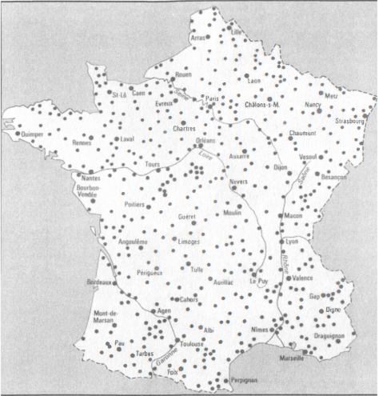
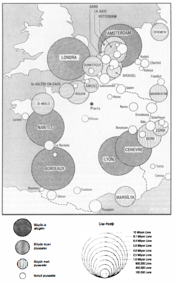
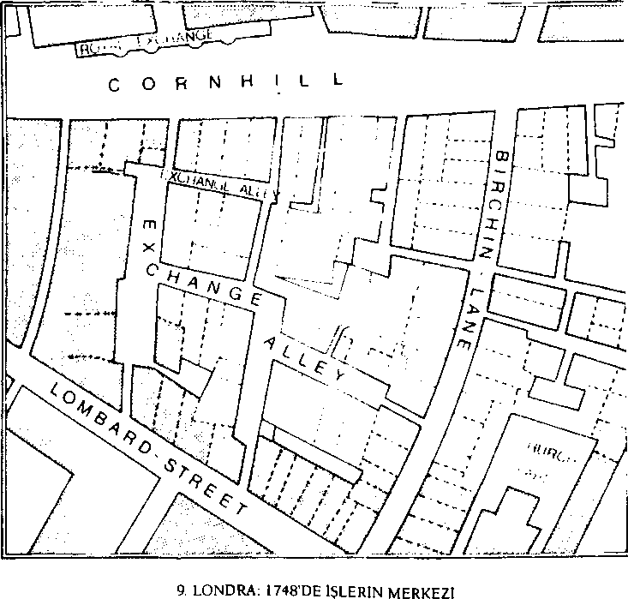

Pazarların, dükkânların, seyyar satıcılığın üzerinde, parlak aktörlerin elinde olan güçlü bir mübadele üstyapısı yer almaktadır. Burası başlıca çarkların, büyük ekonominin, zorunlu olarak onsuz varolamayacak kapitalizmin katıdır.
Bu dünün dünyasında, büyük çaplı ticaretin aletleri fuarlar ve borsalardır. Bunun nedeni, tüm büyük işleri kendilerinde toplamaları değildir. Fransa’da ve kıtada yapılan noter incelemeleri -rollerinin yalnızca kimlikleri onaylamak olduğu İngiltere’de değil- çok sayıda ve çok önemli muamelelerin kapalı kapılar ardında bağlandığını göstermektedirler. Bunlar o kadar çok sayıdadırlar ki, Jean-Paul Poisson gibi bir tarihçiye göre, iş hacminin düzeyini ölçmenin bir biçimini sağlamaktadırlar. Paranın yavaşça ihtiyata girdiği ve her zaman temkinli ve etkin bir şekilde çıkamadığı şu hazneler olan bankalar da, artan bir yer almaktadırlar. Ve Fransız konsolosluk hükümleri (bu konsolosluklara daha sonra bir de iflasa ilişkin sorun ve uyuşmazlıkları çözme yetkisi verilmiştir), mal için ayrıcalıklı bir yargı sağlamaktadırlar, “per legem mercatoriam" hamarat ve sınıf çıkarlarını kollayan bir adalettir. Öylesine ki, Le Puy (17 Ocak 1757), ve Perigueux (11 Hazİran 1783) ticari hayatlarını kolaylaştıracak olan konsolosluk yargısını talep etmektedirler.
XVIII. yüzyıldaki Fransız ticaret odalarına (ilki 1700’de Dunkerque’de) ve İtalya’da taklid edilenlerine (Venedik 1763, Floransa 1770) gelince, bunlar büyük tüccarları diğerlerinin aleyhine güçlendirmeye yönelmişlerdir. Bir Dunkerqueli tüccarın açık açık söylediği budur (6 Ocak 1710): “Bütün bu ticaret odaları... 5 veya 6 kişiyi, seyrüfeserin ve yerleştikleri yerdeki ticaretin mutlak efendileri haline getirerek, genel ticareti (herkesin ticareti) iflas ettirmekten başka bir işe yaramazlar”. Kurum yerine göre az çok başarılı olmuştur. Marsilya’da ticaret odası, ticari hayatın kalbidir; Lyon’da ise bu iş belediyenin elindedir, öylesine ki, çok fazla ihtiyaç duyulmayan ticaret odası, sonunda toplanmayı unutmuştur. Genel denetçi 27 Hazİran 1777’de “Lyon ticaret odasının toplantılarını hiç yapmadığını veya çok az yaptığını, 1702 tarihli meclis kararı hükümlerinin hiç yerine getirilmediğini ve bu kentte ticarete ilişkin her şeyin belediye temsilcileri tarafından -yani belediye memurları- incelendiğini ve karara bağlandığını öğrendim” diye yazmaktadır. Ama bir kurumu gündelik hayata davet etmek için sesi yükseltmek yeterli midir? Saint-Malo 1728’de kraldan bir ticaret odasını boşuna istemiştir.
Fuarlar pazarlardan daha az eski olan, ama gene de yaşlı kurumlardır ve birçok bakımlardan geçmişin içine dalmaktadırlar. Tarihsel araştırma, bunların Fransa’daki kökenlerini, haklı veya haksız olarak, Roma’nın gerisine, uzaktaki büyük Kelt hac ziyaretlerine kadar geri götürmektedir. Batı’daki XI. yüzyıl Rönesansı, genellikle söylendiğinin tersine, bir sıfırdan hareket olmayacaktır, çünkü kent, pazar, fuar, hal, kısacası yalnızca yeniden ele alınmaları yeterli olan adetlerin izleri hâlâ sürmektedir. Saint-Denis’deki Lendit fuarlarının en azından IX. yüzyıla kadar geri gittiği (Kel Charles’ın saltanat dönemi); Troyes fuarlarının Roma dönemine ait oldukları; Lyon fuarlarının M. S. 172’ye doğru kuruldukları söylenmektedir. İddialar, söylentiler, hem evet, hem hayır, çünkü tüm belirtilere göre, fuarlar bu iddiaların işaret ettiklerinden de eskidirler.
Yaşları bunların her halükârda canlı ve koşullara uyum sağlayan kurumlar olmalarını engellememektedir. Rolleri, doğmakta olan mübadelelerin çok dar olan çemberini kırmaktır. 1800’de bir Meuse köyü, eksikliğini çektiği madeni kap kaçağın oraya kadar gelmesi için, bir fuar kurulmasını istemektedir. Yalnızca civardaki köy ve kentlerdeki zenaatkâr düğünlerine benzeyen, çok sayıdaki mütevazi kasaba fuarları bile, alışılmış mübadele çemberlerini fiilen kırmaktadırlar. Büyük fuarlara gelince, bunlar geniş bölgelerin ekonomilerini seferber etmektedirler; bazen Batı’nın tümü burada randevulaşmakta, serbestiler ve bağışıklıklardan yararlanarak, bir an için birçok vergi ve geçiş resminden kurtulmaktadırlar. Bundan sonra, her şey fuarın tasnif dışı bir buluşma yeri olması için işbirliği yapmaktadır. Bu belirleyici kavşaklara çok erkenden el koymuş olan hükümdar (Fransa kralı, İngiltere kralı, imparator) lütufları, bağışıklıkları, garantileri, ayrıcalıkları artırmıştır. Bu arada geçerken kaydedelim ki, fuarlar ipsa facto serbest değildir ve Beaucaire fuarı bile dahil, hiçbiri tam bir serbest mübadele rejimi altında yaşamamaktadır. Örneğin Saumur’ün her biri üç gün süren, üç “krallık” fuarı hakkındaki bir metin, onların “yararlarının az olduğu (nu), çünkü serbest olmadıkları”nı söylemektedir.
Kuşkusuz, tüm fuarlar geçici kentler olarak ortaya çıkmaktadırlar, ama yalnızca katılanların sayısı itibariyle kentlere benzemektedirler. Fuarlar dekorlarını devresel olarak kurmakta, sonra bayram bitince, bunları sökmektedirler. Bir, iki, üç aylık yolculuktan sonra, dekorları yeniden kurmaktadırlar. Demek ki, her fuarın bir ritmi, kendi takvimi, komşularınınkinden ayrı olan kendi belirtici işareti vardır. Zaten en sık kurulanları da en önemlileri olmayıp, basit hayvan panayırları veya o zaman denildiği gibi, yağlı fuarlar’dır. Orleans yakınında Sully-sur-Loire; Brötanya’da Pontigny ve Beaumont de Lamagne’da Saint-Clair’den her birinin yılda sekiz fuarı vardır; Montauban vergi idari bölgesindeki Lectoure 9; Auch 11 fuara sahiptir; “Haute Marche d’Auvergne’deki büyücek Chenerailles kasabasının yağlı fuarları, burada satılan ve çoğu Paris’e götürülen besi hayvanlarının sayısıyla ünlüdürler”. Bu fuarlar her ayın ilk salısı kurulmaktadırlar. Demek ki, toplam olarak 12 tane. Aynı şekilde, Puy kentinde “her cins hayvanın, özellikle de çok sayıda katır ile birçok pöstekinin, Languedoc işi kaba pöstekilerin, ak ve al Auvergne bezlerinin, keten, yün iplik, her cins kürkün satıldığı, yılda 12 fuar vardır”. Normandiya’daki Mortain 14 fuarıyla bir rekorun sahibi midir? Bu çok iyi ata hemen aceleyle oynamayalım.
Tabii ki fuar vardır, fuarcık vardır. Aslında büyücek bir yün pazarından ibaret olan, Siena’dan çok uzakta olmayan Toscanella’nın minik fuarı gibi, kırsal fuarlar vardır. Kış biraz uzarsa, köylülerin koyunlarını kırpmalarını engellemekte (1652 Mayısında olduğu gibi) ve fuar iptal edilmektedir.
Gerçek fuarlar, bir kentin tümünün onlara kapılarını açtığı fuarlardır. Bu durumda ya fuar her şeyi istila etmekte ve kent haline gelmekte ve hatta fethedilen kentten daha fazla bir şey olmaktadır; ya da kent fuarı belli bir mesafede tutacak kadar güçlü olmaktadır: bu bir karşılıklı ağırlık sorunudur. Lyon, dört anıtsal fuarının yarı yarıya kurbanıdır. Paris kendininkilere egemen olmakta, onları büyük pazarlar ölçeğine indirmektedir; surların dışında, Saint-Denis’de cereyan eden, herzaman canlı eski Lendit fuarı böyledir. Nancy kendininkileri kentin dışında, ama elinin uzanabileceği Saint-Nicolas-du-Pont’da bırakma bilgeliğini göstermiştir. Normandiya’daki Falaise, onları büyük Guibray köyüne sürgün etmiştir. Bu şamatalı ve ünlü buluşmaların fasıla dönemlerinde, Guibray Uyuyan Güzel’in sarayı haline gelmektedir. Beaucaire başka birçok kent gibi, şehrin ününü ve servetini sağlayan Madeleine fuarını, kendiyle Rhone arasına yerleştirme tedbirini almıştır. Boşuna çaba: olağan olarak 50 bin kadar ziyaretçi kenti istila etmekte ve düzene benzer bir şeyi sağlamak için de, eyalet mareşalliğinin tüm birlikleri gerekli -ve yetersiz- hale gelmektedirler.

1841’DE FUARLARIN HÂLÂ KALBURA ÇEVİRDİKLERİ BİR FRANSA Kaynak: Ticaret ve Mal Sözlüğü, 1841,1, s. 960 vd.
Üstelik bu kalabalık genelde, fuarın açılısından -22 Temmuz- 15 gün kadar önce gelmektedir, yani güvenlik güçlerinin kente varmasından önce. 1757’de, güvenlik güçlerinin, ziyaretçilerin ve kent halkının “güvenlikte" olmaları için, ayın tam 12’sinde gönderilmeleri önerilmiştir.
Fuarlarının tamamen egemenliği altına giren bir kent, kendi olmaktan çıkmaktadır. XVI. yüzyılda yıldızı parlayacak olan Leipzig, fuarın rahat etmesi için meydan ve binalarını yıkıp, yeniden yapmıştır. Fakat Kastilya’daki Medina del Campo, bu alanda daha da iyi bir örnektir. Kent, yılda üç kere kurulan ve tahta direkli evleriyle ve fuar zamanı pazar ayininin balkonda icra edildiği katedralin karşısındaki muazzam plaza mayor'uyla, uzun Rua’yı işgal eden fuarla karışmaktadır; satıcılar ve alıcılar işlerine ara vermeye gerek kalmadan, ayini izlemektedirler. Saint-Jean de la Croix çocukken, meydanın boyalı barakaları karşısında büyülenmiş olmalıdır. Medina del Campo bugün, eski fuarın dekoru, boş kabuğu olarak kalmıştır. Main-üzeri- Frankfurt’ta, XVI. yüzyılda fuar henüz uzakla kurulmaktadır. Fakat ertesi yüzyıl, fazlasıyla gelişmiş olarak her şeyi istila etmiştir. Yabancı tüccarlar ev tutarak kente yerleşmekte ve burada İtalya, İsviçre kantonları, Hollanda firmalarını temsil etmektedirler. Bunun sonucunda artan bir iskân ortaya çıkmaktadır. Olağan olarak, ailelerinin küçük erkek çocukları olan bu yabancılar, kente basit bir ikâmet hakkıyla (bei- serserschutz) yerleşmektedirler; bu ilk adımdır; sonra burgerrecht elde edilmekte; sonra da bunlar efendi ağzıyla konuşmaktadırlar. Sürecin aynı olduğu Leipzig’de, 1593’te Calvinistlere karşı zincirlerinden boşanan ayaklanma, aslında Hollandalı tüccarlara karşı, bir cins “ulusal" tepki değil miydi? Öyleyse bu durumda, eğer öyleyse, büyük bir ticari kent olan Nuremberg’in, 1423-1424’le ve 1431’de imparatordan fuar kurma konusunda gerekli ayrıcalıkları sağlamış olmasına rağmen, bunları kurmaktan vazgeçmesinin bilgelik olduğunu mu düşünmek gerekir? Bilgelik veya basiretsizlik? Kendi olarak kalacaktır.
Fuar gürültü, şamata, halk çalgıları, halkın neşesi, dünyanın tersine dönmesi, düzensizlik, fırsat çıktığında patırtı demektir. Fuarları XIV. yüzyıla kadar geri giden, Floransa yakınlarındaki Prato’ya, her yılın Eylülünde Toskana’nın bütün kentlerinden sounore’li trombetti gelmekte ve bunlar kentin sokak ve meydanlarını doldurmaktadırlar. Saint Mathieu veya Saint Siffrein fuarının arefesinde, Carpentras’da, kentin dört kapısında, sonra da meydanlarda ve nihayet sarayların önünde, trompetlerin kulak delen sesi yükselmektedir. “Her seferinde, belediyeye trompetçi başına 7 sol’e malolmakta” ve çanlar sabahın dördünden itibaren aralıksız çalmaktadır; havai fişekler, kestane fişekleri, trampet sesleri, kent bunları parayla elde etmektedir. Ve işte tüm şaklabanların, mucize ilaç satıcılarının, müstahzar, “söktürücü” veya tiryak satıcılarının, falcıların, hokkabazların, üç kağıtçıların, ip cambazlarının, diş çekenlerin, gezgin “hanende ve sazendelerin istila saldırısı. Hanlar insanla kaynamaktadır. Paris’te Büyük Perhiz’den sonra başlayan Saint-Germain fuarı, aynı zamanda başkentin hafif hayatını da buraya toplamaktadır: bir dalgacının dediğine göre bu, sokak kızları için “bağbozumu zamanıdır”. Ve oyun bu işin meraklısı kadar, kolay kadım da buraya çekmektedir. Blanque (beyaz) denilen lotarya öfke yaratmaktadır: çok sayıda boş (beyaz) bilet dağıtmakta (bunlar kaybediyor) ve kazanan siyahlar az sayıda olmaktadır. Çok sayıda oda hizmetçisi birikimlerini ve blanque sayesinde evlenebilme umutlarını kaybetmiş değil midir? Fakat bu oyun, yetkililerin homurtulu gözetimlerine rağmen, fuarın bazı dükkânlarına yerleşen gizli kumarhanelere nazaran hiçbir şeydir. Bunlar, Polonyalıların müdavimi oldukları, Leipzig oyun evleri kadar caziptirler.
Fuar nihayet, istisnai olarak, oyuncu gruplarının buluşma yeridir. Saint- Germain fuarı, Paris Halinde kurulduğu günlerden beri, tiyatro oyunlarına fırsat yaratmaktaydı. 151 l’de programda olan şu Salaklar prensi ve şu Salak ana, Sainte- Beuve’ün “daha o sıralarda bile bizim vodvillerimiz” dediği, Orta Çağ kaba güldürü geleneğini temsil etmektedirler. Buna, büyük modası bir kez kaybolduktan kısa süre sonra, kendine fuarlarda son bir sığınak bulan İtalyan komedisi katılacaktır. 1764’de Carpentras fuarında, “Gaetano Merlani ve Floransalı grubu” “komediler” önermekteydiler; Melchior Mathieu de Piolent ise “bir attıklarınca oyunu” ve Giovanni Greci sahne aralarından kendi müstahzarlarını satmak için yararlandığı “tiyatro oyunları” sunmaktaydılar.
Seyirlik unsurlar sokakta da vardır: “(Carpentras) belediye meclisi üyelerinin, önlerinde, uzun elbiseleriyle altın külçeler taşıyan kürkçüler olduğu halde, açılış resmi geçitleri”; resmi kortejler; La Haye’de stathouder, Paille Alessandrio’sundaki fuarlarda Sardinya kral ve kraliçesi, Reggio d’Emilia’da “tayfasıyla birlikte” Modena dükü ve böyle sürüp gitmektedir. Toskanalı bir simsar olan Giovanni Baldi ödenmemiş ticari alacaklarını toplamak için Polonya’ya giderken, Ekim 1685’te Leipzig fuarına gelmiştir. Mektupları, o sıralarda büyük bir gelişme içinde bulunan fuarlar hakkında bize neler göstereceklerdir? Altesleri Saksonya dükünün maiyetinde “çok sayıda hanım, senyör, Alman prensi” olduğu halde buraya varışından başka bir şey değil. Bunlar “fuarın en dikkat çekici şeylerini görmek için uzaklardan gelmişlerdir. Hanımlar da tıpkı senyörler gibi, insanı büyüleyecek kadar muhteşem kıyafetler içinde görülmektedirler”. Onlar da gösterinin bir parçasıdırlar.
Zaman geçince, kaçış, dünyevi yaşam, acaba bu büyük ölçekli gösteriler için uygun terimler midir? Bazen evet. Hollanda’nın siyasal kalbi haline henüz gelmiş olan La Haye’de, fuarlar özellikle stathouder için, sofrasına “seçkin baylar ve bayanlar”! davet etmenin bir fırsatıdır. Venedik’te Göğe Yükselme günü başlayan ve onbeş gün süren Sensa fuarı, bir ayin ve tiyatrovari bir gösteridir. San Marco meydanına yabancı tüccarların barakaları yerleşmekte; kadınlar ve erkekler sokağa maskeli çıkmakta ve Doge, eski zamanlarda olduğu gibi, San Nıcolo’nun karşısında denizle evlenmektedir. Fakat Sensa fuarına, vakit geçirmek ve şaşırtıcı kentin manzarasının tadını çıkartmak için her yıl gelen, 100.000’den fazla yabancının yığılmalarını düşünün. Bologna’da da aynı şekilde, Porchetta fuarı, aynı anda hem halka, hem de aristokratlara ait olan muazzam bir bayramın fırsatını yaratmaktadır ve XVII. yüzyılda bu nedenle, Piazza Maggiore’de, her yıl farklı bir geçici tiyatro dekoru kurulmaktadır. Bu dekorun Insignia resimlerinden arşivlerde korunmuş olanları, çılgınlıkları gözler önüne sermektedir. Tiyatronun yanında, az sayıda olan “fuar dükkânları”, birçok zevke hitap etmek için kurulmuştur. Halkınkilere mi? Hayır, büyük iş dünyası için. Londra’daki Bartholomew Fair de, basit halk keyiflerinin buluşma yeri olup, “ciddi mübadele yoktur”. Gerekirse kermes, boşalma, tersine hayat olan tüm canlı ve daha az canlı bu fuarların havasını hatırlatmak için yapılan gerçekten tortusal fuarlardan biri. Atasözü “fuardan, pazardan dönülür gibi dönülmez” derken haklıdır.
Buna karşılık, Paris’teki Saint-Germain fuarı, zevkin damgası altında olmayı sürdürerek canlı kalabilmiş tek fuar olarak -çok aranan bir gösteri olan, binlerce meşalesiyle, ünlü “nocturne”lerini düşünelim- gene de ticari yanını muhafaza etmektedir: bu fuar kitlesel kumaş, yünlü, bez satışına tanık olmakta; arabalarını bir cins tahsisli “parking”de park eden zengin bir müşteri kitlesi tarafından izlenmektedir. Ve bu görüntü, yukarıda söylediklerimizden daha fazla, her şeyden önce ticari buluşma yeri olan fuarların sıradan gerçeğine tekâbül etmektedir. Şaşkın iki Hollandalı ziyaretçi (Şubat 1675) şöyle kaydetmektedirler: “burada bulununca ve pahalı malların bu büyük çeşitliliğini gözönüne alınca, Paris’in dünyadaki en nadir şeylerin hepsinin bulunduğu bir merkez olduğunu itiraf etmek gerekir”.
Fuarların çoğu zaman, yalnızca tüccarlar arasındaki toptan pazarlan olduğu söylenmiştir. Bu onların esas faaliyetini işaret etmekte, ama temeldeki muazzam halk katılımını ihmal etmektedir. Herkes fuara girebilir. Bu konuda iyi yargıçlar olan meyhanecilere göre, Lyon’da “fuarlara atla gelip, harcayacak ve iyi yerde konaklayacak kadar parası olan bir tüccara karşılık, on tane başkası yayan gelmekte ve yerleşecek küçük bir meyhane bulunca rahat etmektedir”. Salerno’da veya benzeri başka bir Napoli fuarında, köylü bulutları, kimi bir domuz, kimi bir balya ham ipek veya bir fıçı şarap satmak üzere, fırsattan yararlanmaktadır. Akitanya’da, sığırtmaçlar ve düz işçiler, fuara ortak keyifler için gitmektedirler: “fuar için gün doğmadan yola çıkılmakta ve anayollardaki meyhanelerde durakladıktan sonra, gece yarısı geri dönülmektedir”.
Henüz esas olarak tarımsal olan bu dünyada, bütün fuarlar (çok büyükleri bile) fiilen, muazzam köylü kitlesine açıktırlar. Leipzig’de fuarlar, önemli at hayvan panayırlarıyla ikiye katlanmaktadırlar. 1567’ye doğru, Berg-op-Zoom’la birlikte dört büyük fuara sahip olan (her biri üç haftalık olmak üzere, her iki kentte de ikişer tane) Anvers’de, aynı zamanda üçer günlük iki at panayırı kurulmakta, bunlardan biri Pentecöte, diğeri de Notre-Dame de Septembre yortusunda olmaktadır. Burada “göze hoş görünen ve kârlı”, özellikle Danimarka’dan gelen kaliteli hayvanlar satılmaktadır -sonuçta otomobil sergileri. Gene Anvers’de tasnif, türlere göre ayırım vardır. Fakat, Venedik Terra Ferma'sının başlıca kenti olan Verona’da her şey birbirine karışmaktadır ve uzman lâfına göre, Nisan 1634’te, fuarın başarısı dışarıdan gelen mallardan çok, “buraya getirilen her cins hayvanın sayısına” bağlı olmuştur.
Bu söylendikten sonra, ekonomik anlamda, fuarların esas unsurunun büyük tüccarların faaliyetine bağlı olduğu doğrudur. Aleti mükemmelleştirerek, fuarları büyük işlerin buluşma yeri haline onlar getirmişlerdir. Fuarlar krediyi icat veya yeniden icat etmişler midir? Oliver C. Cox, bunun şu yapay kentler olan fuarlarda değil de, tamamen gerçek ticari piyasalarda gerçekleştiğini ileri sürmektedir. Kredinin kuşkusuz dünya kadar eski olması gibi, bu konuda kavga biraz boşunadır. Her halükârda bir nokta kesindir: fuarlar krediyi geliştirmişlerdir. Bir “ödeme” seansıyla kapanmayan hiçbir fuar yoktur. Örneğin, Avusturya’nın muazzam Linz fuarında böyledir. Daha ilk başarısından itibaren, Leipzig’de, rahlwoche denilen sonuncu hafta da böyledir. Papalık devletinin küçük bir kenti olan ve aslında mütevazi boyutlarda olmasına rağmen, bir fuarın istilasına uğraşan Lanciano’da bile, avuç avuç eski kambiyo senetleri bulunmaktadır. Aynı şekilde, fuarları Beaucaire’dekilerin menzilleri olan Pezenas veya Montagnac aşağı yukarı aynı nitelikte olup, buralarda da ya Paris, ya da Lyon’a çekilen bir dizi kambiyo senedi dolaşmaktadır. Fuarlar gerçekte, birbirlerini yok ederek, güneş görmüş kar gibi eriyen borçların bir karşılaşmasıdır: bunlar sconfro’nun, telâfinin harikalarıdır. Birkaç yüz bin “altından altın”, yani efektif sikke halindeki ecu, Lyon’da clearing yoluyla, milyonlara varan mübadeleleri ödeyebilmektedir. Üstelik, geriye kalan borçların bir bölümü, ya belli bir piyasada ödeme vaadiyle (kambiyo senedi), ya da gelecek fuara aktarma yoluyla kapatılmaktadır: bu sonuncusu, yılda olağan olarak % 10’dan (üç ayda % 2,5) ödenen deposito’dur. Fuar böylece kredi yaratmaktadır.
Eğer bir fuar bir piramide benzetilecek olursa, temelde yer alan ve ham, olağan olarak çabuk bozulan ve düşük fiyatlı mallara yönelik çoklu ve küçük faaliyetlerden itibaren, kat kat yükselerek sonunda, uzaktan gelen ve yüksek fiyatlı olan lüks mallara ulaşılmaktadır; zirve, o olmazsa hiçbir şeyin yerinden kıpırdayamayacağı veya en azından aynı hızla kıpırdayamayacağı, faal para ticareti tarafından oluşturulmaktadır. Öte yandan, büyük fuarların evrimi, kabaca, mala nazaran krediye, piramidin tabanına nazaran zirvesine avantaj sağlamışa benzemektedir.
Her halükârda bu, eski Champagne fuarlarının örnek kaderlerinin, çok erkenden çizdikleri eğridir. 1260’a doğru, bu fuarlar zirvedeyken, mal ve para çok canlı bir ticareti desteklemekteydi. Dalgaların geri çekilmesi kendini hissettirmeye başladığında, ilk önce mallar etkilenmiştir. Sermaye piyasası daha uzun süre ayakta kalmış ve 1320’lere kadar, uluslararası faal bir ödeme sistemini korumuştur. XVI. yüzyılda daha da ikna edici bir örnek, Besançon fuarları denilen Piacenza fuarlarıdır. Bunlar 1525’te Cenevizliler tarafından Besançon’da kurulmuş olan fuarların -adları da burada gelmektedir- devamıdırlar. Cenevizliler o sırada imparatorluk kenti olan Besançon’da, I. François’nm girmelerini yasakladığı Lyon fuarlarıyla rekabet etmek için bu fuarları kurmuşlardır. Bu Ceneviz fuarları, yılların raslantısına göre, Besançon’dan Lons-le-Saunier’ye, Montluel’e, Chambery’ye, sonunda da Piacenza’ya aktarılmışlardır (1579), burada 1622’ye kadar başarılı bir hayat sürmüşlerdir. Onları görünüşlerine bakarak yargılamayalım. Piacenza, zirvede meydana gelen bir fuardır. Yılda dört kere, belirleyici ama gizli bir toplantı yeri olmaktadır, biraz günümüzdeki Bâle uluslararası banka toplantıları gibi. Buluşmada hiçbir mal yoktur, buraya çok az nakit para getirilmekte, aslında Avrupa’nın tümünün zenginliğinin işareti olan çok büyük miktarda kambiyo senedi bulunmaktadır ve İspanya imparatorluğunun ödemeleri bu zenginliğin en güçlü akımını meydana getirmektedir. Bu fuarda altmış kadar işadamı bulunmaktadır, bunların çoğu Cenevizli banchieri di conto, birkaçı Milanolu, diğerleri de Floransalıdır. Bunlar oldukça büyük bir giriş aidatı (3.000 ecu) ödenmeden girilemeyen bir klübün üyeleridir. Bu ayrıcalıklılar conto'yu, yani her fuarın sonunda, tasfiye takas kurunu belirlemektedirler. Bu an, ikinci elden olmak üzere sarrafların -cambiatori- ve büyük firmaların temsilcilerinin izledikleri, bu toplantıların en büyük anıdır. Gizil tavırlar içindeki toplam 200 kişi, belki de her fuarda 30- 40 milyon ecu’ye varan, hatta eğer Cenevizli Domenico Peri’nin (1628) iyi belgelenmiş kitabına inanılacak olursa, bunun daha da üstüne çıkan muazzam işleri sonuca bağlamaktadırlar.
Fakat her şeyin bir sonu vardır, hatta dahiyane ve kârlı Ceneviz clearing’inin bile. Bu sistem, Amerikan gümüşünün Ceneviz’e yeterli miktarlarda geldiği sürece işlemekteydi. Beyaz maden gelişleri 1610’lara doğru azalınca, yapı sarsılmaya başladı. Tamamen keyfi olmayan bir tarih seçmek üzere, fuarların 1622’de Novi’ye aktarılmasını ele alalım; Milanolular ve Toskanalılar bu aktarımı kabul etmemişlerdir ve bu, işlerin tersine döndüğünün iyi bir kıstasıdır. Fakat bu sorunlara tekrar döneceğiz.
Aralarında bağlı olan fuarlar, birbirlerine tekâbül etmektedirler. İster yalnızca ticari, isterse kredi fuarları söz konusu olsun, bunlar akımları kolaylaştırmak için örgütlenmişlerdir. Eğer belli bir bölgenin (örneğin, XV. yüzyılda Lombardiya veya Napoli krallığı veya Tuna üzerinde Linz’de kesişen fuar devreleri: Krems, Viyana, Freistadt, Graz, Viyana, Salzburg, Bolzano fuarları bir harita üzerine yerleştirilecek olursa, bu birbirlerini izleyen toplantıların takvimi, bunların karşılıklı bağımlılıkları kabul ettiklerini göstermektedir, çünkü tüccarlar bir fuardan diğerine arabaları, yük hayvanları veya sırtlarındaki yükleriyle geçmekte, bu iş, yolculuk çemberi kapanıp, yeniden başlayana kadar sürmektedir. Yani bir cins sürekli hareket. Orta Çağda büyük Champagne ve Brie fuarlarını aralarında paylaşan dört kent, Troyes, Bar-üzeri- Aube, Provins ve Lagny, yıl içinde birbirlerine aralıksız bir şekilde balyalar göndermektedirler. Henri Laurent ilk akımın, Flandre fuarlarınınki olduğunu iddia etmektedir; Champagne fuarları bunu taklid etmiş olmalıdırlar. Bu mümkündür. Ancak belki de, akım halindeki hareket, hemen her yerde ve adeta kendiliğinden olmak üzere, sıradan pazarlarınkine benzeyen mantıki bir gerekirlikten de kaynaklanmış olabilir. Pazar için olduğu gibi, fuar tarafından arz ve talep kapasitesi boşaltılan bölgenin, kendini toparlaması için zamana ihtiyacı vardır. Bu nedenle zorunlu aralar vardır. Çeşitli fuarların takviminin, bunları birbiri ardına ziyaret eden fuarcı tüccarların güzergâhlarını kolaylaştırması da gerekir.
Mallar, para ve kredi bu döngüsel hareketin içine alınmışlardır. Para tabii ki, aynı zamanda en geniş açılımlı akımları canlandırmakta ve olağan olarak, koşularına yeniden başlamak üzere yola çıktığı merkezi bir noktaya ulaşmaktadır. XI. yüzyıldan itibaren net bir toparlanma içinde olan Batı’da, sonunda bir merkez tüm Avrupa ödemelerine egemen olacaktır. XIII. yüzyılda burası Champagne fuarlarıdır; bu fuarlar 1320’den sonra gerilemeye başlayınca, her yerde yansımaları görülmüştür -uzaktaki Napoli krallığına varıncaya kadar-; sonra sistem, XV. yüzyılda Cenevre çevresinde iyi kötü yeniden kurulmuş; daha sonra Lyon’a geçmiş; nihayet XVI. yüzyılın sonunda Piacenza fuarları çevresinde, yani Cenova çevresinde oluşmuştur. Bu birbirlerini izleyen sistemlerin işleyişleri konusunda hiçbir şey, birinden diğerine geçişte meydana gelen kopuşlar kadar açıklayıcı değildir.
Ancak, 1622’den sonra, artık hiçbir fuar, Avrupa’nın ekonomik hayatının zorunlu olarak merkezinde olmayacak ve bütüne egemen olamayacaktır. Gerçek bir fuar kenti olmayan Amsterdam, Anvers’in eski üstünlüğünü kendi hesabına geçirerek, rolünü kanıtlamaya başlamıştır: burası kendini sürekli bir ticaret ve para piyasası olarak örgütlemektedir. Bu kentin başarısı, Avrupa’nın ticari fuarlarının gerilemesini vurgulamaktadır. Fuarlar çağı, zirvesinden aşağı inmektedir.
XVIII. yüzyılda, hükümet tedbirlerinin “birkaç yıldan beri, yabancı ülkelere, mamul malların çoğunu resim ödemeden gönderme ve hammaddeyi de vergiden muaf olarak sokma (özgürlüğünü) tanımalarının, üstünlüğü bu muafiyetleri tanımak olan fuarların ticaretini yıl be yıl azaltacağımı kabul etmek gerekir, “ve yıldan yıla bu malları fuarlardan geçirmeden, onların ticaretinin doğrudan yapılmasına giderek alışılmaktadır".Bu farkına varış, genel maliye denetçisinin, Eylül 1756’da Beaucaire fuarına ilişkin bir mektubunda yer almaktadır.
Turgot, 1757’de Encyclopidie'de yayınlanan, fuarlara ilişkin makalesini bu sıralar kaleme almış olmalıdır. Ona göre fuarlar, “alıcılar ve satıcıların karşılıklı olarak aradıkları çıkar kolaylıkları"ndan doğan “doğal” pazarlar değildir, “demek ki (fuar), Avrupa’nın bir kesiminin üretimlerinin büyük masraflarla toplandığı ve ulusların buluşma yerine benzeyen bu parlak fuarlara verilmesi gereken serbesti tarafından canlandırılan bir ticaretin doğal mecrası olma gibi bir durum atfedilmemelidir. Bu çok yüksek maliyetleri telâfi etmesi gereken kâr, eşyanın tabiatından değil de, ticarete bazı yerlerde ve zamanlarda ayrıcalıklar ve muafiyetler tanınırken, diğer her yerde vergi ve resimlerle sıkıntıya sokulmasından kaynaklanmaktadır”. Öyleyse, kahrolsun ayrıcalıklar, veya ayrıcalıklar herkes için geçerli ticari kurumlar ve uygulamalar haline gelsin. M. de Gournay “bazı günlerde iyi bir et yemeği yemek için, tüm yıl boyunca oruç tutmak gerekir mi?” diye sormakta ve Turgot bu cümleyi kendi hesabına geçirmektedir.
Ama hergün et yemek için, bu eski kurumlardan kurtulmak yeterli olacak mıydı? Hollanda’da fuarların kaybolduğu (şaşırtıcı La Haye örneğinin önemi düşüktür) doğrudur; İngiltere’de eskiden “beyond all comparison" olan büyük Stourbridge fuarının 1750’den sonra ilk gerileyen kesim olan toptan ticaretini kaybettiği de doğrudur. Demek ki Turgot, çoğu zaman olduğu gibi haklıdır; fuar köhne bir mübadele biçimidir; onun döneminde hâlâ yanılsama yaratabilir ve hatta hizmet bile görebilir, ama ancak rakipsiz olduğu yerlerde. Ekonomi ilerlemektedir. XVII. ve XVIII. yüzyıllarda Frankfurt’un biraz hayal kırıklığına uğramış ve hâlâ canlı fuarlarıyla, Le- ipzig’in yeni fuarları; büyük Polonya fuarları -Lublin, Sandomir, Thorun, Poznan, Gniezno, Gdansk (Danzig), Leopol (Lwow), Galiçya’daki Brzeg (XVII. yüzyılda burada bir seferinde 20.000 baştan fazla hayvan görülebilmektedir)-, ve kısa bir süre sonra, düşten bile daha fazla bir şey olan Nijni Novgorod fuarının ortaya çıkacağı, Rusya’nın düş gibi fuarları böyle açıklanmaktadırlar. Avrupa’nın Atlantik ötesinde yeniden başladığı Amerika’da da durum, a fortiori böyledir. Yalnızca kaba bir örnek seçmek üzere, bu kıtada, Darien kıstağı üzerinde yer alan Nombre de Dios fuarı kadar, aynı anda hem basit, hem de devasa olan başka bir fuar görülebilir mi? Bu fuar 1584’ten itibaren, gene kendinin aynı, gene devasa olmak üzere, eski yeri kadar sağlıksız Porto Belo komşu limanına taşınacaktır. Avrupa malları burada, Peru’dan gelen beyaz madenle mübadele edilmektedir. “Tek bir sözleşmeyle, sekiz-on bin dükalık işler bağlanmaktadır...". Porto Belo’yu 1637’de ziyaret eden İrlandalı rahip Thomas Gage, pazarda tıpkı taş yığınları gibi gümüş tepeleri gördüğünü anlatmaktadır.
Güney Almanya’ya ulaşan Alp geçitleri üzerinde yer alan Bolzano fuarlarının inatçı parlaklığını, bu kaymalar ve bu gecikmelerle açıklayabilirim. İtalyan Mezzogiorno’sunun şu çok canlı fuarlarına gelince, bunlar İtalya’nın ekonomik sağlığı konusunda ne kadar da kötü işaretlerdir. Gerçekten de, ekonomik hayat hızlanırsa, eski bir duvar saati gibi olan fuarlar yeni hızlanmayı izleyememekte; fakat bu hayat yavaşlayınca, fuar varlık nedenine yeniden kavuşmaktadır. Sözüm ona “istisnai" bir fuar olan, çünkü “gelişme döneminde (1724-1765) duraklayan” ve “etrafta her şey gerilediğinde yükselen (1775-1790)" Beacaire’in davranışını böyle açıklıyorum. Languedoc’ta ve herhalde başka yerlerde de, artık “gerçek” XVIII. yüzyıl olmayan bu asık suratlı dönem boyunca, üretim Madeleine fuarına kullanılmayan artık ürünlerini atmakta ve Sismondi’nin dediği gibi, bir “sıkışma" bunalımını başlatmaktadır. Ama bu sıkışma o sırada, buradan başka nerede bir çıkış kapısı bulabilirdi? Beaucaire’in bu ters yöndeki atılımı konusunda, ben kendi hesabıma, yabancı toptan ticaretin rolünü değil de, öncelikle bizzat Languedoc’un ve Provence’ın ekonomisini gündeme getireceğim.
İyi niyetli bir Fransız olan Tremouillet adındaki birinin 1802’deki biraz basit projesini, kuşkusuz bu açıdan anlamak gerekmektedir. İşler kötü gitmektedir. Binlerce Parisli küçük tüccar iflasın eşiğindedir. Ancak gene de bir çözüm vardır (ve çok basit bir çözüm): Paris’te, kentin sınırında, Devrim meydanında devasa fuarlar kurmak. Yazar, bu geniş boş alanda, dama tahtası biçiminde ve kenarında dükkânlar olan yollar ile hayvanlara ve vazgeçilmez atlara tahsis edilen muazzam çitli alanlar hayal etmektedir. Ne yazık ki, işlemin ekonomik üstünlüklerini sergilemek söz konusu olduğunda, proje kötü savunulmuştur. Belki de yazara göre her şey kendiliğinden o kadar açıktır ki, bunları açıklamaya gerek duymamıştır.
Fuarların yavaş, çoğu zaman farkedilmeyen (ve bazen tartışılabilir) gerilemeleri hâlâ birçok sorunu ortaya çıkartmaktadır. Richard Ehrenberg onların, borsaların rekabeti karşısında yenik düştüklerini düşünmekteydi. Andre E. Sayous bunun savunulamaz bir tez olduğu cevabını vermekteydi. Gene de kabul etmek gerekir ki, Piacenza fuarları XVI. yüzyılın sonunda ve XVII. yüzyılın başında ticari hayatın merkezleri oldularsa, dünyanın yeni merkezi, daha sonra çabucak Amsterdam borsası olmuştur: bir biçim, bir çark bir diğerine galip gelmiştir. Borsalar ve fuarların birarada varolmalarının önemi yoktur, bu durum yüzyıllardan beri vardır: böylesine bir yerine geçme bir günde gerçekleşemez. Ve sonra, Amsterdam borsası, tartışılmaz bir şekilde geniş sermaye piyasasını ele geçirdiyse de, aynı zamanda mal hareketlerini de çok yakından örgütlemektedir (Asya karabiber veya baharatı, Baltık tahılı ve ürünleri). Werner Sombart’a göre, doğru açıklamayı, taşınan, stoklanan, yeniden gönderilen mallar katında aramak gerekir. Fuarlar her zaman mal yoğunlaşmaları olmuşlardır ve XVIII. yüzyılda da öyle olmaya devam etmektedirler. Mallar burada ihtiyata alınmaktadır. Fakat nüfusun artması, kentlerin daha o sıralarda bile felâket düzeyinde olan büyümeleri, tüketimin yavaş bir şekilde iyileşmesi karşısında toptan ticaret ancak gelişebilir ve fuar kanalının sınırını aşmaktan, bağımsız bir şekilde örgütlenmekten başka bir şey yapamaz. Bu bağımsız örgütlenme, ambarlar, depolar, tahıl ambarları veya antrepolar aracılığıyla, dükkânı hatırlatan düzenliliğiyle, fuarın devrevi faaliyetlerini ikâme etmeye yönelmektedir.
Açıklama gerçeğe yakındır. Fakat Sombart onu kuşkusuz biraz uzaklara götürmektedir. Ona göre önemli olan, malların müşterinin iki adım ötesinde ve sürekli bir şekilde yığıldığı, toptancı ambarlarının naturaliler mi -bu durumda bir depodan ibarettir-, yoksa mercantaliter mi -yani ticari bir tarzda- işleyeceğini bilmektir. Sonuncu durumda ambar, üst mertebeden bir dükkân, sahibinin toptancı olduğu gene de bir dükkândır ve bu tüccara artık soylu bir şekilde “negotiant” (toptancı) adı verilecektir. Mallar, ambarın kapısında perakendecilere, “iple bağlı olarak” büyük miktarlarda teslim edilecektir, yani balyalar açılmadan. Bu toptan ticaret ne zaman başlamaktadır? Belki Anvers’de Lodovico Guicciardini (1567) zamanında? Fakat bu konudaki her kesin kronoloji, ancak tartışmalı olabilir.
Ancak, XVIII. yüzyılla birlikte, özellikle Kuzey’in Atlantiğe bağlı faal ülkelerinde, toptan ticaretin, o zamana kadar görülmedik bir gelişme içine girdiğini inkâr olanaksızdır. Londra’da toptancılar kendilerini, mübadelenin her alanında dayatmaktadırlar. Amsterdam’da, XVIII. yüzyılın başında “hergün çok sayıda gemi geldiği için..., bu teknelerin getirdikleri tüm mallan koyacak kadar çok sayıda ambar ve mahzen bulunduğunu anlamak kolaydır: kent bunlardan yana öyle donanımlıdır ki, yalnızca beş kattan sekiz kata kadar olan ambar veya tahıl ambarından meydana gelen mahalleler vardır ve bunun dışında, kanalların üstündeki evlerin çoğu iki veya üç ambar ve bir mahzene sahiptirler”. Bu donanım her zaman yeterli olmamakta ve yüklerin “istenildiğinden daha uzun süre” teknelerde kaldığı olmaktadır. Öylesine ki, eski evlerin arsalarına çok sayıda yeni ambar yapılmakta ve bunlar “çok iyi gelir getirmektedirler.
Antrepo ve ambarların lehine olmak üzere, ticari yoğunlaşma XVIII. yüzyılda Avrupa’da fiilen genel bir olgu haline gelmiştir. Örneğin ham pamuk, “yün pamuk” eğer Orta Amerika’dan geliyorsa Cadiz’de; eğer Brezilya kaynaklıysa Lizbon’da (azalan fiyat sırasıyla Pernambouc, Marancero, Para pamukları); Hindlerden geliyorsa Liverpool’de; ve eğer Doğu Akdeniz’den geliyorsa Marsilya’da yoğunlaşmaktadır. Ren üzerindeki Mainz, Almanya için, Fransa kökenli şarapların büyük istasyonudur. Lille daha 1715’ten önce üç büyük ambara sahiptir. Alçak Ülkeler’e gönderilecek hayat suyu burada toplanmaktadır. Nantes ve Bordeaux Fransa’nın adalar ticaretinin (şeker, kahve) başlıca antrepolarıdır; bu ticaret XV. Louis döneminde, krallığın ticari başarısını körüklemektedir. Flatta Mulhouse, Nancy gibi orta büyüklükteki kentler bile, her boydaki antrepolarının sayısını artırmaktadırlar. Bu örnekleri büyük sayılar halinde artırmak mümkündür. Demek ki, fuarlar Avrupa’sının yerine geçen bir antrepolar Avrupa’sı resmolmaktadır.
Böylece, XVIII. yüzyılda her şey Sombart’ı haklı çıkartmaktadır. Ama, ya bu tarihin öncesinde? Mercantaliter, naturaliler gibi iki tarz arasındaki ayırım akla yakın mıdır? Her zaman ambarlar ve antrepolar varolmuştur (storehouses, warehouses, nie- derlager, magazini di trafico, Orta Doğunun hanları, Moskof devletinin ambary’si). Ve hatta, daha sonra yeniden biryerlere gönderilecek malların toplanma yeri olma meslek ve ayrıcalığına sahip “antrepo kentler" (Amsterdam bu türün modelidir) bile varolmuştur. Fransa’da XVII. yüzyılda Rouen, Paris, Orleans, Lyon böyledirler; Dunkerque’deki “aşağı nehir antreposu” böyledir. Her kentte özel ve kamuya ait ambarlar bulunmaktadır. Haller XVI. yüzyılda genel olarak (Dijon ve Beaune’da böyledir) “aynı anda hem toptancı ambarları, antrepo ve menzil olmuşa benzemektedirler”. Tuz veya buğdaya tahsis edilmiş kamusal ambarlar, zaman içinde daha gerilere gitmektedirler. Sicilya çok erkenden, herhalde XV. yüzyıl öncesinde, limanlarının yakınında, buğdayın yığıldığı muazzam ambarlar olan caricatori’ye sahip olmuştur; buğday sahibi bir makbuz (cedola) almakta, ve bu cedolaların ticareti yapılmaktadır. Barselona’da XIV. yüzyıldan itibaren, Montjuich’deki güzel kâgir ticari binalarda “ambarlar zemin katta yer almakta, (tüccarın) konutu, envanterlere göre katlarda bulunmaktadır”. Venedik’te 1450’ye doğru, Rialto meydanının çevresinde, kentin ticari hayatının kalbinde, dükkânlar uzmanlaşmış sokaklar üzerinde yer almak üzere birbirlerini izlemektedir; “bu dükkânların her birinin üzerinde, manastır yatakhanesine benzeyen bir salon bulunmaktadır, böylece her Venedikli tüccar mallar, baharat, değerli kumaşlar, ipeklerle dolu kendi ambarına sahip olmaktadır”.
Bu ayrıntılardan hiç biri, tartışmayı tek başına noktalayabilecek nitelikte değildir. Bunlardan hiç biri basit stoklama ile toptan ticareti birbirinden ayırmamaktadır ve kuşkusuz bu ikisi erkenden birbirlerine karışmışlardır. İyileştirilmiş bir araç olan antrepo mütevazi, karma biçimler altında, zorunlu olarak uzun zamandan beri vardır, çünkü ezelden beri, aşikâr ihtiyaçlara, gerçeği söylemek gerekirse, ekonominin zayıflıklarına cevap vermekteydi. Depolamayı zorunlu kılan, üretimin ve ticari hayatın aşırı uzun devresi, yolculuk ve haberlerin yavaşlığı, uzak pazarların rastlantısı, üretimin düzensizliği, mevsimlerin sinsi oyunudur... Zaten bunun sağlaması da yapılmıştır, çünkü XIX. yüzyılda hızın artmaya ve taşımacılığın kapasitesinin büyümeye başlayacağı günden, üretimin güçlü fabrikalarda yoğunlaşacağı günden itibaren, eski antrepo ticareti büyük ölçüde değişmek, bazen de tamamen silinmek zorunda kalacaktır.
Samuel Ricard'ın 1686’da yayınlanan Le Nouveau Negotiant’ı, borsayı “bankacı, tüccar, toptancı, kambiyo ve banka acenteleri, simsar ve diğer kişilerin buluşma yeri” olarak tanımlamaktadır. Kelime, bu toplantıların yapıldığı “eski ve soylu bir aile olan Van der Bourse’lardan olan bir senyörün yaptırdığı ve cephesine, üzerinde üç kese (bourse) yer alan aile armasını kaktırdığı Bourses Konağı”nın yanında yapılmasından kaynaklanıyor olmalıdır, “... bu keseler bu binanın üzerinde hâlâ görülmektedirler”. Açıklamanın uyandırdığı bazı kuşkuların önemi yoktur. Kelime her halükârda başarıya ulaşmıştır, ama diğer adları yok edememiştir. Lyon’da borsaya Kambiyo Meydanı denilmektedir; Hansa kentlerinde tüccarlar koleji; Marsilya’da Loca; Barselona ve Valencia’da Lonja adını almaktadır. Borsanın her zaman kendine tahsis edilmiş bir binası bulunmamaktadır; bu nedenle toplantı yeri ile bizza borsa arasında sıklıkla karıştırmalar yapılmaktadır. Sevilla’da tüccarlar toplantısı, hergün grados’ta, katedralin basamaklarında yapılmaktaydı; Lizbon’da, daha 1294’te zikredilmiş olan, kentin en geniş ve uzun caddesi olan Rua Nova'da; Cadiz’de, 1596 yağmasından sonra herhalde bölünmüş olan Calle Nuevo'da; Venedik’te Rialto revaklarının altında ve 1459’da meydanda gotik tarzda inşa edilip, 1558’de yeniden inşa edilen Loggia de i Mecccmfi’de; Floransa’da bugünkü Piazza Mentana'da yer alan Mercato Nuovo’da; Cenova’da Strada Nuono’dan 400 m. ileride bulunan Piazza de i Bcmdıi’de; Lille’de Beauregard’da; Liege’de, XVI. yüzyılda ya Beach rıhtımında, ya da piskoposluk sarayının geniş galerilerinin altında inşa edilmiş olan Poids Public evinde, hatta yakındaki bir meyhanede; La Rochelle’de, 1761’de özel bir bina yapılana kadar “Petits-Bacs ile Admyrauld caddelerinin arasında”, “le Canton des Flamands” denilen yerde açık havada yapılmaktaydı. Main-üzeri-Frankfurt’ta, toplantılar fischmarkt’la, balık pazarında, unterfreien himmel, açık havada yapılmaktaydı. Leipzig’in çok güzel borsa binası 1578-1682 arasında “auj dem naschmarkt" inşa edilmiştir, tüccarlar bundan önce bir kemerin altında, bir fuar dükkânında veya kantarın yakınında açık havada toplanmaktaydılar. Dunkerque’de “bütün tüccarlar (hergün) öğlen saatinde, bu kentin evinin (yani belediye binası) önündeki meydana (toplanırlar). Ve burada herkesin gözü önünde ve onların duymalarına rağmen... kaba sözlerin arkasından... koca serpuştular arasında ağız dalaşı çıkmaktadır”. Palermo’da, bugünkü Garafello meydanının yerinde bulunan loggia tüccarların toplantı yeridir ve 1610’da onlara, buraya “sonata l’avemaria di Santo Antonio”dan sonra bir kereden fazla gitmeleri yasaklanmıştır. Paris’te uzun zaman Kambiyo meydanı ve Adalet Sarayı’nda oturan borsa, 24 Eylül 1724 tarihli Meclis kararıyla Vivienne caddesindeki Nevers sarayına yerleşmiştir. Londra’da Thomas Gresham tarafından kurulan borsa, sonradan Royal Exchange adını almıştır. Bu kurum kentin merkezindedir, öylesine ki, yabancılararası bir mektuplaşmaya göre, Mayıs 1670’te Quaker’lara karşı alınan tedbirler esnasında, askerler “dove si radumano li mercanti", gerekirse gidilmesi gereken yerlere ulaşabilecek bir yerde olmak üzere, burada yığınak yapmışlardır.
Fiili durumda, her piyasanın borsasının olması olağandır. Konunun özetini yapan bir Marsilyalı (1685) “birçok yerde çarşı ve Doğu Akdeniz iskelelerinde pazar” denilerek, terimler değişiyorsa da, gerçeğin her yerde aynı olduğunu kaydetmektedir. Bu durumda, Cebelitarığa Rus konsolosu olan Leeds Booth adlı şu İngilizin şaşkınlığım anlayışla karşılayalım. Ostermann kontuna yazdığı büyük raporunda (14 Şubat 1782), “(Cebelitarık’ta), büyük ticaret kentlerinde olduğu gibi, tüccarların pazarlık etmek için toplandıkları bir kambiyo yerine sahip değiliz; ve samimi konuşmak gerekirse, burada çok az (tüccara) sahibiz, ancak burası çok küçük ve hiçbir şey üretmiyor olmasına rağmen, barış zamanında çok büyük bir ticaret yapılıyor" demektedir. Cebelitarık tıpkı Livorno gibi, karanlık işler ve kaçakçılığın gelişmekte olduğu bir kenttir. Bir borsa onun ne işine yarar?
ilk borsalar ne zaman ortaya çıkmışlardır? Bu noktada kronolojiler yanıltıcı olabilirler: binaların inşa tarihi ticari kuruluş ile karıştırılmamalıdır. Amsterdam’da bina 1631 tarihlidir, oysa Yeni Borsa 1608’de kurulmuştur ve eskisi de 1530’a kadar geri gitmektedir. Demek ki çoğu zaman, değerleri her neyse o olan geleneksel tarihlerle yetinmek gerekmektedir. Borsayı kuzey ülkelerinde doğmuş olarak gösteren yanlış kronolojik listeyle değil: Bruges 1409, Anvers 1460 (binası 1518’de inşa edilmiştir), Lyon 1462, Toulouse 1469, Amsterdam 1530, Londra 1554, Rouen 1556, Hamburg 1558, Paris 1563, Bordeaux 1565, Kolonya 1566, Leipzig 1635, Berlin 1716, La Rochelle 1761 (inşaat), Viyana 1771, New York 1772.
Görünüşe rağmen, bu başarı tablosu hiç bir kuzey önceliğini belirlememektedir. Fiilen, borsa gerçekliği içinde, en azından XIV. yüzyıldan itibaren olmak üzere Akdeniz’de, Piza’da, Venedik’te, Floransa’da, Cenova’da, Valencia’da, Pierre le Ceremonieux’ye ısmarlanan Lonja'nın 1393’te bitirildiği Barselona’da serpilmiştir. Bu binanın hep ayakta kalan, gotik tarzdaki geniş salonu, yapılışının eskiliğini ortaya koymaktadır. 1400’e doğru “burada koskoca bir simsar güruhu, sütunlar ve küçük gruplar arasında gidip gelmektedir, bunlar corredors d’orella, kulak simsarlarıdır", bunların görevi dinlemek, rapor vermek, ilgilileri temasa geçirmektir. Barselona tüccarı hergün katır sırtında Lonja’ya gitmekte, işlerini görmekte, sonra bir dostuyla, güzel bir dinlenme için, Loca’nın meyva bahçesine gitmektir. Ve bu borsa faaliyeti veya borsa edası, alışılmış kıstaslarımızın işaret ettiklerinden, herhalde daha eskidir. Örneğin 1111 ’de Lucca’da, San-Marino kilisesinin yakınında sarraflar toplanmaktaydılar bile: onların çevresinde tüccarlar, noterler, bu güç halinde bir borsa değil midir? Uzak mesafe ticaretinin müdahale etmesi yeterlidir ve baharat, karabiber ve sonra da Kuzey ringaları için olsa bile, çok erkenden müdahale etmiştir... Akdeniz Avrupa’sının bu ilk borsa faaliyeti, zaten ex nihilo bir yaratı da değildir. Kelime değilse bile gerçeklik çok eskidir; Doğu’nun ve Akdeniz’in tüm büyük merkezlerinin çok erkenden tanıdıkları tüccar toplantılarıyla yaşıttır ve bunlar M. S. II. yüzyılın sonuna doğru Roma’da varmışa benzemektedirler. Mozayiklerin tüccarlara ve yabancı tekne sahiplerine tahsis edilmiş yerleri işaretlediği, Ostia’daki şu dikkat çekici meydanda, buna benzer buluşmaları kim hayal edemez ki?
Borsalar birbirlerine benzemektedirler. En azından XVII. yüzyıldan itibaren, faal saatlerdeki manzara, dar bir alana yığılmış gürültülü bir kalabalığınki olmaktadır. Marsilyalı toptancılar 1653’te “kendilerine loca olarak hizmet edecek ve pazarlık alanı olarak çok uzun zamandan beri kullandıkları sokaktan, zararını çektikleri uygunsuzluktan onları kurtaracak bir yer” talep etmektedirler. 1662’de işte, Puget pavyonunun zemin katında, “dört kapıyla rıhtıma açılan büyük bir salonda”dırlar; “kapıların her yanında gemilerin yola çıkış pusulaları asılmıştır”. Fakat burası kısa bir süre sonra çok küçük gelecektir. Gueidan şövalyesi dostu Suard’a, “huraya girmek için yılan soyundan olmak gerekiyor" diye yazıyordu; “ne şamata! Ne kadar gürültü! Plutus tapınağının çok özel bir şey olduğunu itiraf ediniz”. Bunun nedeni, her iyi tüccarın hergün sabahın sonuna doğru borsada bir dolaşmak zorunda olmasıydı. Buraya gitmemek, çok büyük sıklıkla uydurma olan haberlerin peşine düşmemek, iyi bir fırsatı kaçırmak ve belki de işlerinizin durumu hakkında can sıkıcı bir söylentinin çıkmasına neden olmak demektir. Daniel Defoe warehousekeeper'i törensel bir şekilde uyarmıştır: “To be absent from charge, which is his market..., at the time when the merchants generally go about to buy" tamamen felâket aramak demektir.
Amsterdam’daki büyük Borsa binası 1631’de bitirilmiş olup, Dam meydanında Banka’nın Oostindische Companie'nin binasının karşısındadır. Jean-Pierre Ricard’ın (1722) zamanında, oraya hergün öğleden, saat ikiye kadar yığılan insan sayısı 4.500 olarak tahmin edilmektedir. Cumartesi kalabalık daha azdır, çünkü Yahudiler gelmemektedir. Borsanın düzeni katıdır, numaralanmış yerler her ticaret dalına tahsis edilmiştir, yeminli olan veya olmayan bin kadar simsar vardır. Ama burada, kargaşanın, avazı çıktığı kadar bağırılarak ilân edilen rakamların konkunç konserinin, hiç aralıksız konuşmaların gürültüsünün içinde kendini bulmak hiç de kolay değildir.
Bütün oranların korunması halinde, borsa bir fuarın en üst katıdır, fakat fuarın tersine, kesintiye uğramamaktadır. Önemli tüccarların ve bir aracılar bulutunun buluşması sayesinde, her şey burada aynı anda sonuca bağlanmakta, mallar üzerindeki işlemler, değişimler, ortalıklar, riskleri çok sayıda güvence veren kişi arasında dağıtan deniz sigortaları yapılmaktadır; burası aynı zamanda bir para piyasası, bir mali piyasa, bir menkul değerler piyasasıdır. Bu faaliyetlerden her birinin kendi tarzına göre örgütlenme eğilimine girmesi doğaldır. Amsterdam’da, XVII. yüzyılın başından itibaren, aynı zamanda ayrı bir tahıl borsası olmuştur; bu borsa haftada üç kere, saat ondan öğlene kadar, çok büyük bir tahta salonda toplanmaktadır, burada her tüccarın “bir veya iki libre alabilecek çuvallar içinde... satmak istediği tahıl numunelerini oraya götürmekle görevli” adamı bulunmaktadır. Tahıl fiyatları ağırlıklarına göre olduğu kadar, kalitelerine göre de olduğu için, Borsa’nın gerisinde birçok küçük terazi bulunmakta, bunlarla üç veya dört avuç tahıl tartıldıktan sonra... çuvalın içindekinin çekisi anlaşılmaktadır". Bu tahıllar Amsterdam’a ülke ihtiyacı için olduğu kadar, yeniden satış veya yeniden ihracat için de ithal edilmektedirler. Numune üzerine alımlar, İngiltere’de ve Paris çevresinde, özellikle askeri birlikler için yapılan kitlesel mübayaalarda, erkenden kural haline gelmişlerdir.
XVII. yüzyılın başındaki yenilik, Amsterdam’da bir menkul değerler piyasasının kurulmasıdır. Kamu fonları, Doğu Hindler kumpanyasının prestijli hisse senetleri çok canlı ve kesinlikle modern spekülasyonların nesnesi haline gelmişlerdir. Bunun çoğu zaman denildiği gibi, ilk menkul değerler borsası olduğu tam doğru değildir. Devlet borçlarına ilişkin belgeler, Venedik’te çok erkenden, Floransa’da 1328’den önce ticarete konu olmuşlardır; luoghi ve Casa di San Giorgio’nun paghe’sinin faal bir piyasa olduğu Cenova’da, (Kuxeri'den söz etmiyoruz), Alman madenlerinin hisse senetleri XV. yüzyıldan itibaren Leipzig fuarlarında kote edilmiştir; İspanyol juros’u, Belediye üzerine Fransız rantları (1522) veya Hansa kentlerinde XV. yüzyıldan itibarenki rant piyasası da böyledirler. 1318 tarihli Verona statüleri, vadeli piyasayı (mercato cı termine) resmen onaylamışlardır. Hukukçu Bartolomeo de Bosco 1428’de Cenova’da, vadeli loca satışlarına itiraz etmektedir. Akdeniz’in daha eski olduğuna dair birçok örnek.
Fakat Amsterdam’da yeni olan şey, muamelelerin hacmi, akışkanlığı, reklamının yapılması, spekülasyon serbestliğidir. Oyun buraya çılgın bir şekilde karışmaktadır, oyun için oyun: 1634'e doğru Hollanda’da dehşet yaratan lâle çılgınlığı sırasında, “bizatihi bir değeri olmayan” bir soğana karşılık, “yeni bir araba, iki boz at ve koşumları” verme noktasına kadar gelinmiştir! Fakat usta ellerin hisse senetleri üzerindeki oyunları, rahat bir hayat sağlayabilecek bir gelir getirebilirdi. Köken olarak İspanyol Yahudisi olan meraklı bir tüccar, Joseph de la Vega (1650-1692), 1688’de Amsterdam’da Confusion de Confusiones gibi ikircikli bir ad taşıyan ve imbikten geçme üslubu yüzünden (o sıralardaki İspanyol edebiyatının stilo culto üslubu) kolay anlaşılamayan, ama ayrıntılı, canlı, türünde tek olan garip bir kitap yayınlamıştır. Bu cehennem oyununda arka arkaya beş kere iflas ettiğini ima ettiği yerde, tabii ki ona tamamen inanmamıza neden yoktur. Veya çoktan eskimiş şeylerle keyiflendiğinde: 1688’den çok önceleri “ringa daha yakalanmadan, buğdaylar ve diğer mallar daha bitmeden veya alınmadan vadeli olarak satılmışlardır”; Isaac le Marie’nin Hindler hisse senetleri üzerinde, tam da XVII. yüzyılın başındaki rezil spekülasyonları, daha o sıralarda bile kurnazlığın, hatta üç kâğıtçılığın binlerce numarasını yansıtmaktadırlar; aynı zamanda simsarların borsa işlerine karışarak, tüccarları fakirleştirdiklerini söylerken, onların zenginleşmeleri de, uzun zamandan beri rastlanan bir şeydir. Tüm piyasalarda, Marsilya veya Londra, Paris veya Lizbon, Nantes veya Amsterdam’da, kurallar tarafından tam zaptedilemeyen simsarlar, tüccarları parmaklarında oynatmaktadırlar.
Fakat, Amsterdam’daki borsa oyunlarının bir incelme ve gerçekdışılık noktasına ulaştıkları da doğrudur; bu durum onu Avrupa’da uzun süre ayrı bir piyasa; iniş ve çıkışlar hakkında konuşularak, yalnızca hisse senedi alıp satmakla yetinilmeyen, ama bilgince oyunların, hiç paramız veya hisse senedimiz olmasa bile spekülasyon yapmamıza izin verdikleri bir yer olarak kalacaktır. Simsarlar burada kendilerini canla başla bu işe vermektedirler. Klikler halinde bölünmüşlerdir -bunlara rotterie denilmektedir-, Eğer biri yükselmeye oynarsa, diğeri, yani “karşı mayıncı’’lardan olanı, alçalmaya oynayacaktır. Bu da, spekülatörlerin yumuşak ve kararsız kitlesini şu veya bu yöne sevkedecektir. Bir simsar için taraf değiştirmek -bu olmaktadır- büyük bir hizmet kusurudur.
Ancak hisse senetleri nominaldir ve Hindler kumpanyası senetlerin kendilerini muhafaza etmekte, alıcı ancak bu iş için tutulan bir sicile kaydolarak, hisse senedinin sahibi haline gelmektedir. Kumpanya başlangıçta, bu yolla spekülasyona karşı çıkabileceğine inanmıştır (hisse senedinin sahibine verilmesi ancak sonra kabul edilecektir), ama spekülasyon elde bulundurmayı gerektirmemektedir. Oyuncu, aslında elinde olmayan bir şeyi satmakta, eline geçmeyecek bir şeyi satın almaktadır: bu, o zaman denildiği gibi, “beyaz olarak" satmak veya almaktır. Vade bitiminde, işlem bir kayıp veya kârla kapanmaktadır. Bu küçük fark ödenmekte ve oyun sürmektedir. Başka bir oyun olan prim, yalnızca biraz daha karmaşıktır.
Fiili durumda, hisse senetleri uzun vadede yükseldikleri için, spekülasyon zorunlu olarak kısa vadeye yerleşecektir. Bir anlık dalgalanmaların, yani doğru veya yanlış bir haberin harekete geçirdiklerini yakalamak için pusuya yatacaktır. XV. Louis’nin Birleşik Eyaletler nezdindeki temsilcisi, 1867’de her şeyden önce Java adasındaki Bantam’ın alınmasının etrafında bu kadar gürültü koptuktan sonra, sanki haber yanlışmış gibi, her şeyin yatışması karşısında şaşırmaktadır. 11 Ağustosta “fakat bu girişimden o kadar şaşırmadım" diye yazmaktadır; “Amsterdam’da hisse senetlerinin düşmesine yaradı ve bazıları bundan yararlandı". On yıl sonra, başka bir elçi “La Haye’de çok zengin bir Yahudi olan baron Jouasso’’nun ona “günde yüz bin ekü kazanabilmekle" övündüğünü anlatmaktadır. “... Eğer İspanya kralının (ruhunu teslim etmesi her an beklenilen zavallı II. Carlos) öldüğünün Amsterdam’da duyulmasından 5-6 saat önce öğrenebilirse’’. “Buna kani oldum" diye eklemektedir elçi, “çünkü o ve diğer iki Yahudi, Texeira ve Pinto, hisse senetleri ticaretindeki en güçlü kişilerdir".
Ancak, bu uygulamalar bu dönemde, izleyen yüzyılda Yedi Yıl Savaşlarından sonra İngiliz Doğu Hind Kumpanyasının, İngiltere Bankasının, Güney denizleri kumpanyasının hisse senetleri ve özellikle de, Isaac de Pinto’nun (1771) “yıllık ödentiler okyanusu” dediği, İngiltere hükümet borçları üzerindeki oyunların artmasıyla ulaşacağı genişliği, henüz yakalayamamışlardır. Hisse senetleri kurları, ancak 1747’den itibaren resmen açıklanacaktır. Oysa Amsterdam borsası mal kurlarını 1585’ten beri duyurmaktadır (bu tarihte 339, 1686’da 550 madde).
Daha başlangıcından itibaren, başka yerlere oranla muazzam olan, Amster- dam’daki spekülasyonun parlaklığını ve hacmini açıklayan şey, bu işe yalnızca büyük kapitalistlerin değil, küçük insanların da karışmış olmalarıdır. Bazı manzaralar, bizim at yarışlarındaki müşterek bahisleri akla getirmektedir! Joseph de la Vega 1688’de “bizim spekülatörler, Hollandalıların coffy ve Doğu Akdenizlilerin caffe dedikleri bir içecek satılan bazı evlere devam etmektedirler” diye anlatmaktadır. Bu coffy huisen “kışın davetkâr sobaları, cazip vakit geçirme biçimleriyle, büyük bir rahatlıktır: bazıları okumak için kitap, diğer bazıları oyun masaları ve hepsi konuşacak insanlar sunmaktadır; biri sıcak kakao, diğeri kahve, bir başkası süt, bir diğeri çay içmekte ve hemen hepsi tütün kullanmaktadır... Böylece ısınmakta, büyük bir zevk almakta ve ucuza vakit geçirmekte, haberleri dinlemektedirler. Borsa saatlerinde, şu veya bu borsa oyuncusu bu evlerden birine girince, ona hisse senetlerinin ne ettiği sorulmakla, o da onların o andaki fiyatlarına yüzde bir veya iki eklemekte, küçük bir not defteri çıkartarak, yalnızca aklından yaptığı şeyleri, gerçekten yaptığına inandırmak ve ortalığı kızıştırmak üzere, yazmaya girişmektedir... (kızıştırdığı) daha da yükseleceği kaygısıyla, birkaç hisse senedi alma arzusudur”.
Bu sahne neyi göstermektedir? Eğer yanılmıyorsam, borsanın küçük tasarrufçuların ve küçük oyuncuların ceplerinden beslenme biçimini göstermektedir. İşlemin başarılı olması mümkündür: 1 çünkü, tekrarlayalım ki, kot değişimlerini kolayca izlemeye olanak verecek resmi kur yoktur; 2 çünkü simsar -zorunlu aracı-, tüccarlara ve simsarlara tahsis edilmiş olan Borsa tapınağına girme hakkına sahip olmayan küçük insanlara, gerektiğinde yönelmektedir, oysa borsa söz konusu insanların devam ettiği kahvelerin iki adım ötesindedir: Fransız kahvesi, Rochelleliler kahvesi, İngiliz kahvesi, Leyden kahvesi. Öyleyse söz konusu olan nedir? Bugün küçük borsa oyunları, fon elde etmek için alıcının ayağına gitmek diyeceğimiz şey.
Amsterdam’da spekülasyon bir küçük insanlar kalabalığı demektir, ama büyük spekülatörler de buradadırlar ve en faaller arasında yer almaktadırlar. Michele Tercia adlı, ilke olarak tarafsız bir kalyanın tanıklığına göre (1782), Amsterdam bu geç tarihte bile, hâlâ Avrupa’nın en faal borsasına sahiptir ve Londra’yı geride bırakmaktadır. Ve hisse senetleri üzerindeki oyunun muazzam hacmi (tabii ki o çağın insanlarına göre) bunun böyle olmasına etki etmektedir, üstelik bu durum o sıralar, tedavisi olmayan bir hastalık olan, dışarıdan alman borçlarla çalışmaktadır; bu da Avrupa’da eşi olmayan başka bir spekülasyondur, bu konuya tekrar döneceğiz.
1778’den itibaren önemli bir Amsterdam firmasının başına patron olarak geçmiş olan Louis Greffulhe’ün kâğıtları, bu çifte genişlemeye ilişkin olarak, oldukça canlı bir fikir vermektedirler. Bu hem riske giren, hem de temkinli davranan yeni zenginin olay ve hareketlerine, berrak tanıklıklarına sık sık geri döneceğiz. 1778’de Fransa’nın Amerika’daki İngiliz kolonilerinin yanında savaşa girmesinin arefesinde, Amsterdam’da çılgın spekülasyonlar zincirlerinden boşanmışlardır. Zaman, tarafsızlık şemsiyesi altında, koşullardan yararlanmaya uygun olarak gözükmekledir. Kıtlaşacaklarının öngörüldüğü koloni malları üzerinde riske girmek; İngiliz, sonra da Fransız borçlanmalarının cazibesine kapılmak veya isyancıları mı finanse etmek gerekirdi? Greffulhe, A. Gaillard’a (Paris) “eski adamımız Bringley, burada boğazına kadar Amerikalıların işine battı" diye yazmaktadır. Ona gelince, Greffulhe elinin yettiği ve ona iyi olarak görünen bütün işlere temas ettiğinden büyük ölçü komisyonlu borsa oyunlarına katılmıştır. Kendisi ve başkaları için oynamaktadır; Rodolphe Emmanuel Haller için (özellikle, eski Thelusson-Necker bankasını eline geçirmiş olan bu kişi için), Paris’te ve Cenevre’de bankacılık yapan Jean-Henri Gaillard, Perregauxlar, evrensel Panchard için, H. Lüthy tarafından incelenen Protestan bankacılığında altın harflerle yer alan Alexandre Pietet, Philibert Cramer, Turettini için. Oyun zor ve risklidir, büyük para miktarlarına yöneliktir. Fakat nihayette, Louis Greffulhe bu oyunu çok büyük bir sükûnetle yürütüyorsa, bunun nedeni, özellikle başkalarının paralarının söz konusu olmasıdır. Kaybettiklerinde, bu durum onun canını sıkmakta, ama ümitsizliğe düşürmemektedir: “Eğer fon işinde olduğu gibi (İngiliz fonlarını anlayınız), diğer birçoğunda da tahmin etmek mümkün olsaydı, iyi dostum, yalnızca iyi işler yapardık" diye yazmaktadır Haller’ye. Başka bir yerde, “madalyon tersine dönebilir, daha birçok üst ve alt olacaktır" diye açıklamaktadır. Ancak düşünmeden hiçbir alım ve uzatma yapmamaktadır. Panchard gibi gözü kara, her şeyi riske atan biri değildir, müşterilerinin talimatlarını yerine getirmektedir. Ona “Hindlerden 100.000 livre” (yani İngiliz Doğu Hind Kumpanyası hisse senetleri), “onları 144-145’ten elde edebilecek olan Marcet ve Pictet’yle birlikte, 3/3 hesabından" alması emrini veren Philibert Cramer’e, Greffulhe 4 Mayıs 1779’da “olanaksız" diye cevap vermiştir, “çünkü bu fon uğradığı düşüşe rağmen Ağustos için 154 ve Mayıs için 152 etmektedir. Bu alımın yapılabilmesi için şimdiye kadar bir olanak görmüyoruz, ama onu iyi bir şekilde dikkate aldık”.
Amsterdam’daki her spekülatör için oyun, Londra piyasasındaki kuru ve olayları bilerek, Hollanda piyasasında oluşacak kuru tahmin etmektir. Bu o kadar önemlidir ki, Greffulhe Londra’dan doğrudan bilgiler edinmek için, fedakârlıklarda bulunmaktadır, çünkü bu haberler ona yalnızca posta balyalarıyla gelmemektedir. İngiliz başkentinde -burada kendi hesabına oynamaktadır, mütevazi ve yalnızca bir emir kulu olan kayınbiraderi Sartoris’yle ve çekinmesine rağmen gene de kullandığı, büyük Yahudi firması J. ve Abraham Garcia’yla temas halindedir.
Greffulhe’ün çok canlı mektupları, Amsterdam’daki yüksek spekülasyon konusunda bize yalnızca dar bir pencere açmaktadır. Ama buradan gene de, Hollanda oyununun dışarıya ne denli açık olduğunu, uluslararası bir kapitalizmin burada ne denli yerleşik olduğunu görüyoruz. Louis Greffulhe’ün muhasebesinden iki rescontre defteri daha fazlasını görmemize olanak verebilir: bu karmaşık işlemlerin kâr hesapları. Rescontre (Cenevre’de “rencontre" denilmektedir) her üç ayda bir telâfi işlemleri yapan ve vadeli piyasa ile prim piyasasındaki kâr ve zararların dökümünü yapan, işbaşındaki simsarların biraraya gelmesidir (zaten rescontre, buluşma anlamına gelmektedir). Greflullıc'ün iki defleri, gerekliğinde müşterilerinin hesabına olmak üzere yaptığı işlemlerin dökümlerini içermektedir. Bugünün bir kambiyo acentesi bu defterlere bakarken yabancılık çekmez, ama bir tarihçi burada çok kereler kaybolmaktadır. Çünkü uzatmadan uzatmaya, bir işlemi çoğu zaman birçok rescontre boyunca izlemek gerekmekledir ki, ancak o zaman, her zaman yolun sonunda ortaya çıkmayan kârları hesaplama şansına sahip olunabilir. Hesapları sonuna kadar sürdürme sabrım gösteremediğimi itiraf ediyorum.

FRANSIZ BANKALARININ ATILIMI
Harita Cuy Antonietti tarafından düzenlenmiştir, Une maison de Banque â Paris, au XVIIe siCcle, Greffulhe Montzet Compagnie (1789-1793), 1963, metindışı harita. Greffulhe bankasının o sıralar Paris'in en büyük bankası olması, Paris'in ışıklarını tüm Avrupa’ya saçan bir finans merkezi haline gelmesi kayda değer. Taranmış daireler, Antonietti’nin eğlendirici adlandırmasına göre “büyük iş altıgeni'' ne tekâbül etmektedirler: bundan Londra, Amsterdam, Cenevre, Lyon, Bordeaux, Nantes'ın meydana getirdiği altı ana piyasayı anlayınız. Altıgenin altı tepesinde eşitlik olduğu izlenimi alınmakta değil midir?
Uzun zaman Amsıerdam’ı kıskanan ve ondan kopya çeken Londra’da, oyunlar oldukça çabuk bir şekilde onunkilerle aynı olmuştur. Royal Exchange 1695’ten itibaren, kamu fonları, Hindler kumpanyası ve İngiltere bankası hisse senetleri üzerindeki ilk muamelelere tanık olmaya başlamıştır. Adeta hemen “zaten parası olup da, daha fazlasına sahip olmak isteyenlerle, daha kalabalık olup da, hiç bir şeyleri olmayıp, ona sahip olanlardan kendilerine para çekme umudu taşıyan insanların buluşma yeri haline gelmiştir”. Royal Exchange’de kendini daralmış hisseden menkul değerler borsası, 1698-1700 arasında, onun karşısına, ünlü Exchange Alley’ye yerleşmiştir.
Stock Exchange’in 1773’te kurulmasına kadar, Exchange Alley kahveleri, “vadeli piyasa veya Kambiyo Yolundaki söyleniş biçimiyle, atyanşlan” üzerindeki spekülasyonların merkezi olmuşlardır. Garaway’s veya Jonathan’s işbaşındaki simsarların ve devlet fonlarının buluşma yeri olurken; deniz sigortası uzmanları Edward Lloyd kahvesine, yangın dalı uzmanlan Tom’s veya Carsey’s’e devam etmektedirler. 1700’lere doğru, bir risale yazarı, Exchange Alley “sonunda 1,5 dakika kat’edilebilir” demektedir. “Jonathan’ın kapısında durun, yüzünüzü güneye dönün, birkaç adım ilerleyin, sonra doğuya dönün, Garaway’in kapısına varacaksınız. Buradan yan kapıya geçin ve Birchin caddesine gelmiş olacaksınız... Pusulanızı kutusuna koyduktan ve borsa dünyasının devrialemini tamamladıktan sonra, kendinizi gene Jonathan’ın kapısında bulacaksınız”. Fakat bu minik evren, faaliyetin zirveye çıktığı saatlerde, müdavimleri, hareketli küçük grupları ve bir entrikalar düğümüyle, patlama noktasına gelen bir güç merkezidir. Utrecht’te (1713), İngiltere kraliçesi ile Fransa kralı arasında varılan barış antlaşmasına sinirlenen Fransız protestanları, tüccarları bu antlaşmaya karşı ayağa kaldırmak ve böylece whiglere yardım etmek üzere, protestoda bulunmak üzere nereye gideceklerdir? Borsaya ve “bağırtılarından çınlayan kahvelere" (29 Mayıs 1713).
Bu hassas küçük dünyalar, diğerlerinde değişmelere yol açmakta, ama dışarı da onları aralıksız değiştirmektedir. Kotaları alt üst eden haberler, Amsterdam’da olduğu gibi burada da, her zaman içeride imal edilmemektedir. İspanya Veraset Savaşı, o an için, her şeyin ona bağımlı olduğu düşüncesini uyandİran dramatik olaylardan yana üretken olmuştur. Zengin bir Yahudi tüccar olan Medina, ünlü ve cimri bir kaptan olan Marlborough’ya, yılda 6.000 sterlin ödeyerek, onun tüm seferlerine bir adamını katmayı düşünmüştür; böylece onun ünlü çarpışmalarından -Ramilles, Oudenarde, Blenheim- herkesten öne haberdar olarak, bu parayı fazlasıyla çıkartmaktadır. Hatta Waterloo savaşının ilânı, söylendiğine göre Portekizlilerin yararına olmuştur! Anekdot olsun diye anekdot, Bonaparte acaba Marengo çarpışması (14 Hazİran 1800) haberini, Paris Bankasında sansasyonel bir voliye olanak vermek için mi duyurmamıştır?
Tıpkı Amsterdam’ınki gibi, Londra borsasının da kendi adetleri ve kendine özgü bir jargonu vardır, vadeli muamelelere ilişkin olan puts ve refusals; aslında ne almak ne de satmak konusunda hiç bir arzuları olmayan, yalnızca spekülasyon yapmak isteyen vadeli alıcılar ve satıcılar için bulls ve hears; hükümet lotaryası biletleri üzerinde bir spekülasyon olan riding on horse back vs. Fakat Londra’da işin bütünü itibariyle, biraz gecikmeyle de olsa, Hollanda’daki uygulamaların aynıları ortaya çıkmaktadır; buna rescounters days -kelime Amsterdam’ın Rescontre dagen'ından aynen alınmıştır- de dahildir. Örneğin, hükümet yasaklamaları 1734’de puts ve refusals’ı duraklatıp, tıpkı Amsterdam’da olduğu gibi, hava alıp satmayı en azından bir süre engelleyince, aynı uygulamalara başka bir biçim altında olanak veren rescounters'ın serpilmelerine tanık olmuştur ve Londra’da tıpkı Amsterdam’da olduğu gibi, simsarlar kendilerini mal simsarları (buğday, boyalar, baharat, keten, ipek) stockbrokers ve kambiyo uzmanları olarak ayırmaktadırlar. Thomas Mortimer 1761’de, bu soylar halinde bölünmeye şiddetle itiraz etmekteydi. Every man his broker, Herkes kendinin simsarı, kitabının başlığı böyleydi ve 1767’deki bir mahkeme, bu yöndeki serbesti önlemlerinin fırsatı olacaktır. Simsardan geçmenin zorunlu olmadığı resmen belirtilecektir. Ancak bütün bunlar, zaten tarifeleri nisbeten düşük olan -1697’den beri %1/8- bu mesleğin, borsa hayatındaki önemini vurgulamaktan başka bir şey yapmamışlardır. Bu simsarların üstünde, büyük tüccarların ve kuyumcu-bankacıların eylemi tahmin edilmektedir; simsarların altında ise, argoda jobber mesleğine verilen adla, hınk deyicilerin zınk deyicisi olan, yani lisanslı olmayan bir aracılar zümresinin, hiç de ihmal edilmeyecek eylemleri yer almaktadır. George White 1689’dan beri, “stockjobbers adı verilen bu garip böcek türü”nü, başkalarının aleyhine zenginleşmek ve “Exchange'imizde, tıpkı çekirgelerin eskiden Mısır otlaklarında yaptıkları gibi, insanları yutmak için”, hisse senetlerini istedikleri gibi yükseltip, alçaltmakla itham etmekteydi. Fakat, 1701’de adı “The vilany of stock-jobbers detected" olan küçük bir kitap, yazarı belli olmayan kitabı yazmış olan Defoe değil midir?

1748 tarihli bir resme göre yapılan bu kroki, ünlü yer ve binaları işaret etmektedir: Lombard street, Comhill üzerinde Royal Exchange ve hepsinden ünlü Exchange Alley. Gri parçalar 1666 yangınında yokolan evlere tekabül etmektedir.
Birkaç yıl sonra (1718), bir tiyatro oyunu, A bold stroke for a wife, seyirciyi Jonathan kahvesinde dealers, sworn brokers (yeminli simsarlar) ve özellikle de job- hrrs’ın arasına götürmektedir. Ve işte bir diyalog numunesi:
BİRİNCİ JOBBER - 7/8’e Güney denizi. Kim alıyor?
İKİNCİ JOBBER - Güney denizi senetleri, vade 1718 Saint Michel yortusu. Lotarya biletleri dizisi.
ÜÇÜNCÜ JOBBER - East India hisse senetleri?
DÖRDÜNCÜ JOBBER - İşe bak, herkes satıcı, hiç alıcı yok! Baylar gelecek salı için 3/4’den bin sterlinlik alayım.
BİR GARSON - Taze kahve. Baylar taze kahve?
BİR SARRAF,
BAY TRADELOVE - Dikkat Gabriel, geçen gün bağladığımız şu sermayeden doğan farkı bana ödeyeceksiniz.
GABRIEL - Tamam bay Tradelove, işte bir Sword Blade Company hisse senedi.
GARSON - Baylar çay?
Spekülasyonun Exchequer’s bills (hazine nazırı senetleri) ve Navy bills, artı altmış kadar kumpanyanın (bunların arasında İngiltere Bankası ve 1709’da birliği tekrar sağlanan Hindler kumpanyası başı çekmektedirler) hisse senetlerini de kapsadığını belki hatırlatmak gerekir. “The East India Company was the main point" diye yazmakladır Defoe. Bu tiyatro oyununun oynandığı dönemde, Güney Denizi henüz, South Sea Bubble büyük rezaletine yol açmamıştır. Sword Blade Company bir silah imalathanesidir.
25 Mart 1748’de yangın Exchange Alley mahallesini ve ünlü kahvelerini kül edince, yerleşim yerini değiştirmek gerekmiştir. Fakat simsarlar sıkışık durumdadırlar. Birçok projeden sonra, hisse senediyle ortak olarak oluşturulan bir fonla, 1773’te Royal Exchange’in arkasından yeni bir bina yaptırılmıştır. Ona New Jonathan's adı verilmek istenilmiş, ama sonunda Stock Exchange olarak vaftiz edilmiştir. Dekor değişmekte, resmileşmektedir, ama söylemeye gerek yok, oyun kendinin aynı olarak devam etmektedir.
Eğer iyice düşündükten sonra, Paris yolculuğunu yapma konusunda ısrar edilecek olursa, Borsa’nın 1742’de Hindler Kumpanyasının eski merkezi olan, bugünkü Ulusal Kütüphanenin bulunduğu yerdeki Nevers konağına yerleştiği Vivienne caddesine gitmek gerekir. Londra veya Amsterdam’la kıyaslanabilecek bir şey yoktur. Evet, Law zamanında, Quincampoix caddesi, bir an için Exchange Alley ile rekabet edebilmiştir ama, sonrası daha çok hüzünlü ve yavaşlatıcı olan bu bayramdan sonra, bu rekabetten eser kalmamıştır. Zaten iyi açıklanamayan bir raslantıyla, Vivienne caddesine ilişkin belgelerin hemen tamamı kaybolmuştur.
Paris borsası kuruluşundan ancak 50 yıl kadar sonra, XVI. Louis Paris’inde çok canlı bir şekilde hareketlenmiştir. “Yüksek sosyete kendini firavuna, dominoya, damaya, satranca veriyor" ve asla bilinçsiz bir şekilde değil. “1776’dan beri at yarışları izleniyor, halk Paris’te açılan 110 resmi lotarya bürosunun önünde izdiham yaratıyor”. Ve kumarhaneler her yıl yayılmaktadır. Bu konuda her şeyi bilen polis, hiç müdahale etmemeyi tercih etmektedir, hatta Borsa’nın çevresinde, pusuda bekleyen çok sayıda spekülatörün bulunduğu Palais-Royal’de, her türlü gelirin peşinde koşanlarla, dolandırıcılar, mucizevi spekülasyonların düşünü kurmaktadırlar. Bu iklimde, Amsetrdam ve Londra’daki spekülasyonların örneği dayanılmaz hale gelmektedir. Üstelik Neckcr ve Calonne’un borçlanma siyasetleri, çoğu Parisli olan 500-600.000 kişinin arasında paylaşılan, muazzam bir kamu borcu yaratmaktadır. Öte yandan, borsa kamu borcu için ideal bir pazardır. Vivienne caddesindeki dar binada, simsarlar ve kambiyo acenteleri yeniden örgütlenmişlerdir: bir cins yükseltilmiş döşemenin -parquet- üzerinden her yere egemen olmaktadırlar: onlarla müşterilerinin arasında, bir kişinin ancak geçebildiği dar yolun adı coulisse'tir. Bu sıralarda, aşikâr bir faaliyetin kanıtı olarak, kendine özgü bir kelime haznesi gelişmektedir. Kote edilenlerin başında özellikle kamu borçları kâğıtları gelmektedir, ama Hindler Kumpanyasının (paylara, portions’a ayrılmış) hisse senetleri, artı Fransa Bankası’nm atası olan Iskonto Kasası’nın (Caisse d’Escompte) hisse senetleri yer almaktadır. Fakat Marie-Josephe Desire Martin gibi akıllı bir rehberin eşliğinde bile, “hergün Journal de Paris’de bir sahife yer tutan ve Af/iche’lerde yer alan” listelerden ilk bakışta hemen pek bir şey anlamadığımızı itiraf edelim.
Böylece Borsa spekülasyonu yerleşmiştir. 1779’da Caisse d’Escompte yeniden örgütlenmiş ve hisse senetleri halka satılmıştır. Devlet Şurası o zamandan beri “Caisse d’Escompte hisse senetlerinin öylesine düzensiz bir ticareti olmuştur ki, varolandan dört kat fazlası satılmıştır” demektedir. Demek ki satılmış, yeniden satılmıştır. Genç Tilly kontu tarafından başarılan ve onun tarafından tam anlatılmayan ilginç spekülasyonun (bu iş ona, genç bir aktris olan ve aynı zamanda iltifatlarını bir Posta emininden de esirgemeyen metresi tarafından tavsiye edilmiştir), bu sıralarda gerçekleştirildiğini düşünüyorum. Kontun söylediğine göre sonuç “bana 22 tane Caisse d’Escompte senedi saydılar”, yani 22.000 İivre. Her halükârda, havayla şişen vadeli spekülasyonun o sıralarda, Paris’i fethetmek üzere ilk adımlarını attığına hiç bir kuşku yoktur. II. Ekaterina’mn Paris’teki elçisi Simolin’in, metnini hükümdarına aktardığı, 7 Ağustos 1785 kararı bu bakımdan karakteristiktir. Kararname, bir süreden beri “başkente, alıcılar için olduğu kadar satıcılar için de tehlikeli olan bir cins pazarlık veya kompromi (kelimelerin altını çiziyoruz) gelmiştir; bu yollarla biri sahip olmadığı değerli kâğıtları uzak vadelerde sağlamayı üstlenmekte ve diğeri de fonu olmadığı halde bunların karşılığını ödemeyi kabul etmektedir, burada bir rezerv koyarak, iskonto ile bu kâğıtları vadesinden önce isteme hakkını getirmektedir... Bu bağlanmalar, kamu kâğıtlarının kurlarını anlık olarak bozmaya, bazılarına abartılı değerler getirirken diğerlerini de düşürmeye yönelik bir dizi kurnazca manevraya yol açmaktadır... Bunların sonucunda düzensiz bir kırma işlemi ortaya çıkmakta ve bu işe girişme tedbirsizliğini gösteren herkesin servetini rüzgâra tabi kılan bu uygulamaları her aklı başında tüccar reddetmektedir; bu işlemler ulusal endüstri için en sağlam ve yararlı sermayeleri yolundan çıkartmakta, ölçüsüz ve kuşkulu kazanç elde etme açgözlülüğünü tahrik etmektedir... ve Paris Piyasasının, Avrupa’nın geri kalanında haklı olarak sahip olduğu krediyi tehlikeye sokabilir”. Bu kararnameden sonra, Ocak 1723’ün eski emirnameleri ve (Borsayı kuran) 24 Eylül 1724 kararnamesi yenilenmişlerdir. Duruma göre, 3.000 ilâ 24.000 livre’lik cezalar öngörülmüştür. Tabii ki, bunların hepsi de ölü doğmuş (veya hemen hemen) olarak kalmışlar ve Mirabeau 1787’de Denonciation de l’agiotage au roi’sını yazabilmiştir. Aslında suçluluğu çok az olan bu kırma işlemini iptal etmek, krallığı kurtarmak mı olacaktır?
Bunlar söylendikten sonra, Fransızlar mesleğin çırakları olarak kalmaktadırlar. Necker’in 1781’de başlattığı borçlar hakkında, bizim Amsterdam’daki banker- Komisyoncumuz Louis Greffulhe bu borç senetlerine yazıldıktan veya kendini yazdırttıktan sonra, dostu ve bu işlerdeki sessiz oyuncu Isaac Panchaud’ya 11 Şubat 1782’de şöyle yazmaktadır: “Borcun hemen kapatılmaması (yani satışın durdurulmaması) can sıkıcı, çok can sıkıcıdır. Yüzde beş-altı kazanabilirdi". Kırma işleminin ve fon dolaşımının, bir damla yağın, saatin hareketini kolaylaştırmak için yaptığıyla aynı etkiye sahip olan finans alanındaki bu biçim ve yollardan, ülkemizde henüz hiç bir şey anlaşılmıyor. Fonların “dolaşımından, değerli kâğıtların satışını anlayınız. Borçlanma kapandığında, fiili durumda Amsterdam veya Londra’da senet alım listelerine yazılmış olanların, başkalarının adına yazılmış senetleri daha üst bir fiyattan satın almaları sıklıkla ortaya çıkmakta ve kota yükselmektedir; işlemi yürütenler, ellerinde İm niyetle tuttukları kâğıtların büyük bir bölümünü elden çıkartmanın çok kârlı olduğu ortaya kadar, yükselmeyi körüklemektedirler. Evet, Paris’in spekülasyon piyasası olarak, öğrenecek çok şeyi vardır.
Kesin bir yenilik olan, senetler üzerindeki spekülasyon, XVII. yüzyıldan itibaren büyük gürültü çıkartmıştır. Fakat, Amsterdam, Londra ve onların arkasından, mütevazi konumdaki Paris borsalarını, bizzat Hollandalıların windhandel, rüzgâr ticareti dedikleri şeye indirgemek, şaçma olacaktır. Ahlâkçılar kredi, banka, kâğıt para ve spekülasyonu karıştırarak, bu eşiği sıklıkla aşmışlardır. Yasama Meclisi’nin 1791’de İçişleri Bakanı tayin edeceği Roland de la Platiere, Fransa’da bu noktaya dümdüz varmaktadır: hayranlık verici bir basitleştirmeyle, “Paris yalnızca, kâğıtlar, devlet hurçları, kamusal sefalet üzerinde spekülasyon yapan satıcılar veya parayla oynaşanlar, bankerlere sahiptir” demektedir. Mirabeau ve Claviere, spekülasyonu da eleştirmişlerdir ve Couedie’ye göre, 1791’de “birkaç karanlık yaratığı düştükleri hoşluktan çıkartmak üzere senet kırma işlemi, binlerce yurttaşın iflasına yol açmaklaydı”. Kuşkusuz, Fakat Amsterdam ve Londra’nın büyük borsalarının liyakati, kendini kanıtlamakta yavaş olan kâğıt paranın, her türlü kâğıt paranın zaferini sağlamış olmaktır.
Parasız hiç bir canlı pazar ekonomisinin olmadığı iyi bilinmektedir. Para koşmakta, “çağlayandan düşmekte”, dolaşmaktadır. Tüm ekonomik hayat onu yakalamaya çabalamaktadır. Mübadeleleri artırıcı olan para, her zaman yetersiz miktardadır: maden yatakları yeteri kadar değerli maden sunamamakta, kötü paralar yıllar boyunca iyilerini kovmakta ve iddihar çukurları her zaman açık kalmaktadır, (.özüm: diğer malların yansımalarının meydana geldiği ve kendini tarttıkları bir mal-para aynasından daha iyi bir şey yaratmak; bir işaret-para yaratmak. Bunu ilk kez, IX. yüzyılın başında Çin yapmıştır. Fakat kâğıt-para yaratmak, onların belli bir yere uyum sağlamalarını becermekten daha başka bir şeydir. Kâğıt-para Çin’de kapitalizmin hızlandırılması rolünü oynayamamış, ama Batı’da bu rol ona ait olmuştur.
Gerçekten de, Avrupa çözümü, hatta birçok çözümü çok erkenden bulmuştur. Örneğin XIII. yüzyıldan itibaren Cenova, Floransa, Venedik’teki büyük icat böyledir; bu icat mübadelenin içine küçük adımlarla nüfuz eden, ama nüfuz eden kambiyo senedidir. Beauvais’de kambiyo senetlerini işaret eden ilk devirler, 1685’ten, yani Nantes fermanının kaldırılma tarihinden önceye ait değillerdir. Fakat Beauvais bir taşra piyasasından başka bir şey değildir. Venedik’te erkenden yaratılan başka bir para da, kamu borçları senetleridir. Amsterdam, Londra ve Paris’te kumpanya hisse senetlerinin borsada kote edildiklerini görmüştük. Bunlara, çeşitli kökenlerden, “banka” senetlerini de ekleyiniz. Bütün bu değerli kâğıtlar muazzam bir kitleyi temsil etmektedirler. Bilge kişiler o dönemde, bunun nakit para kitlesinin üç veya dört katını aşmaması gerektiğini söylemekteydiler. Fakat bazı dönemlerde Hollanda veya İngiltere’de l’e 15’lik, hatta daha fazlası oranlar muhtemeldir.
Değerli kâğıtların tam anlamıyla evcilleştirilemediği (hatta Law deneyinden sonra lanetlendiği) Fransa gibi bir ülkede bile, Fransa Bankası’nın daha sonra çıkartacağı senetlerin zorlukla ve yalnızca Paris’te tedavül edeceği Fransa’da, “kredi hacmini ölçen ticari kâğıtlar... 1789’dan önceki maden dolaşımının beş-altı katını temsil etmekteydiler”.
Mübadeleler için gerekli olan bu kâğıtların işe karışmasında, borsalar (Bankalar da) büyük bir rol oynamaktadırlar. Bütün bu kâğıtları piyasaya çıkartarak, kamu borcu senedinden veya bir ödeme senedinden bir anda nakde geçiş olanağını vermektedirler. Geçmişin ekonomik güncelliğe katıldığı bu konuda, ek açıklamalara gerek olmadığını düşünüyorum. Fakat, bunun zıddında olarak, XVIII. yüzyılın başına ait -tarihsiz bir muhtıra, ama Borsa’nın yenilenmesinden 20 yıl kadar önce, 1706’da yazılmış olabilir- bir Fransızca metin bana göre dikkati haketmektedir. 1522 tarihli belediye rantları, Fransa’da, İngiliz yıllık ödentileri'ninkiyle aynı rolü oynamış olabilirlerdi. Oysa bunlar aile babasının bir yatırımı, çoğu zaman mal varlığı içinde hareketsiz hale getirilmiş güvenilir ve zaten ticareti de güç olan bir değer olarak kalmıştır. Onların satışı bir resim ödenmesini ve noterde “koskoca bir işlemler süreci”ni gerektirmektedir. Fransız muhtırası, bunun sonucunda “belediye rantları ticaret için ölü bir fondur ve bunlar iş yapanlara evlerinden veya tarlalarından daha fazla yardımcı olamazlar. Bireysel kârların kötü gözle görülmesi, bu açıdan kamu çıkarma zarar vermiştir” diye açıklamaktadır. Bu durum, eğer İtalya, İngiltere veya Hollanda ile kıyaslama yapılacak olursa, açıkça ortaya çıkmaktadır diye devam etmektedir; “buralarda devlet hisse senetleri, tıpkı tüm menkuller gibi, hiç masrafsız ve sıkıntısız” satılmakta ve taşınmaktadırlar.
Kâğıttan paraya ve tersine çabucak geçiş, kesinlikle değerler borsasının esas avantajlarından biridir. İngiliz yıllık ödentileri yalnızca bir windhandel fırsatı değildir. Bunlar aynı zamanda, yeteri kadar garantili ikincil paralar olup, aynı zamanda faiz içerme gibi bir üstünlüğe sahiptirler. Bunlara sahip olanın nakde ihtiyacı varsa, bunu hemen anında, borsada bir kâğıt karşılığında elde etmektedir. Kolay nakde dönüşme, dolaşım, acaba bunun böyle olmasının altında Hollanda ve İngiltere iş dünyasının iyi durumda olmasının sırrı -veya sırlarından biri- yatmakta değil midir? Heyecanlı bir kalyana inanmak gerekirse, 1782’de İngilizler “Change Alley”de “una mina pi doviziona di quella che la Spagna possiede nel Potosi e nel Messico" sahiptirler. Bundan onbeş yıl kadar önce, 1766’da, J. Accarias de Serrione de, Les Interets de s Nations d’Europe adlı eserinde şöyle yazmaktaydı: “kamu fonlarının borsada oynanır olması..., İngiltere’de krediyi ayakta tutan... başlıca büyük araçlardan biridir; borsa oyununun onlara Londra piyasasında verdiği değer, onların yabancı piyasalardaki değerini saptamaktadır”.